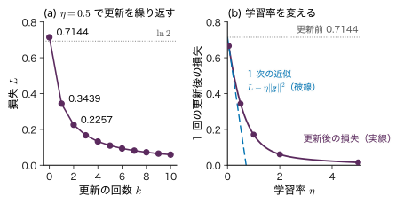
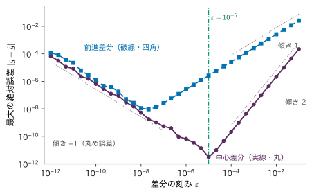
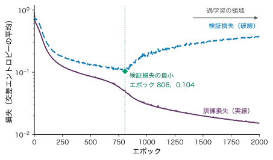
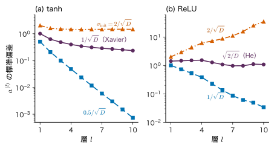
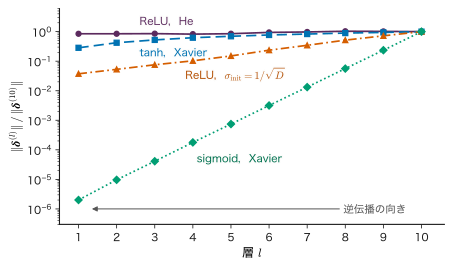
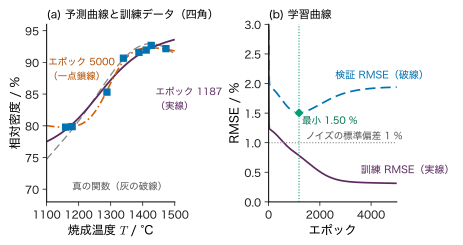

第15章誤差逆伝播と学習 — 連鎖律で勾配を配る
- ニューラルネットワークには何千・何万もの重みがある．そのそれぞれが損失にどれだけ効くか（偏微分）を，どうやって一度に計算するのか．
- 計算した勾配が正しいことを，どうやって確かめるのか．
- 勾配が計算できても学習がうまくいかないのはどんなときか．初期値・層の深さ・学習の止めどきは，結果をどう変えるのか．
重みが 2 個しかないなら，損失 $L$ を重みの式として書き下し，手で偏微分すればよい．しかし，入力 10 個・隠れ層 50 個を 2 段・出力 1 個のネットワークでも重みとバイアスは 3151 個ある．一つの重みを少しだけ動かして損失の変化を測る「数値微分」で勾配を作ると，順方向の計算を 6000 回以上繰り返すことになる．ところが，連鎖律（合成関数の微分）を出力の側から順にたどると，順方向の計算の 3 倍程度の手間で，全部の偏微分がそろう．これが誤差逆伝播（backpropagation）である．
本章では，まず小さなスカラーの式で連鎖律を「計算グラフ」の上でたどり（15.1 節），層を持つネットワークの 4 本の式を成分で導く（15.2 節）．次に，シミュレーターと同じ 2–2–1 のネットワークで順伝播・逆伝播・重みの更新を全部の数値で追い（15.3 節），勾配を差分で確かめる方法（15.4 節）と，ミニバッチで学習を回す手順（15.5 節）を述べる．詳しいルートでは，初期化（15.6 節），勾配消失と爆発（15.7 節），過学習と正則化（15.8 節），自動微分（15.9 節）へ進み，材料データと原子間ポテンシャルの学習に結びつける（15.10 節）．
- 計算グラフの上で連鎖律を逆向きにたどり，枝分かれのある式の偏微分を「経路の和」として求められる．
- 誤差 $\bm{\delta}^{(l)}=\partial\ell/\partial\bm{a}^{(l)}$ の定義から，誤差逆伝播の 4 本の式を成分で導ける．逆伝播の計算量が順伝播と同じ程度である理由を説明できる．
- 2–2–1 のネットワークで，順伝播・逆伝播・1 回の更新を手で計算し，損失が減ることを確かめられる．
- 中心差分による勾配確認を行い，誤差が $O(\epsilon^{2})$ になる理由と，刻みを小さくしすぎると丸め誤差で悪くなる理由を説明できる．
- エポック・ミニバッチ・学習曲線の意味を説明し，早期終了・重み減衰の働きを学習曲線で読める．
- （詳しいルート）初期値の大きさを分散の条件から決め（Xavier，He），勾配消失・爆発の仕組みと，逆モードの自動微分との関係を説明できる．
入門ルートで読む節：15.1，15.2，15.3，15.4，15.5，15.12．「詳しいルート」の印が付いた節は，初めて読むときは飛ばしてよい．
15.1 計算グラフと連鎖律
15.1.1 何をしたいのか
学習とは，損失 $L$ が小さくなる向きに重みを少しずつ動かすことである（第7章 7.2 節）．そのためには，すべての重み $w$ について偏微分 $\partial L/\partial w$ が要る．ニューラルネットワークの損失は，「重み付き和 → 活性化関数 → 次の重み付き和 → … → 損失」という関数の合成でできている．合成関数の微分は連鎖律で求められる．問題は，それを無駄なく行う順番である．
計算の手順を，値を表す丸（ノード）と，演算を表す矢印で描いたものを計算グラフ（computational graph）という．図15.1 は，入力 $x$ に重み $w$ を掛けてバイアス $b$ を足し，tanh を通して，目標値 $y$ との二乗誤差の半分を損失とする「1 個のニューロン」の計算グラフである．左から右へ値を計算するのが順伝播（forward propagation），右から左へ偏微分を計算するのが逆伝播（backward propagation）である．
15.1.2 連鎖律 — 1 本の経路では掛け算
$L$ が $z$ を通して $a$ に依存し，$z$ が $a$ の関数 $z=h(a)$ であるとき，$a$ を少し $\Delta a$ だけ動かすと $z$ は約 $h'(a)\,\Delta a$ 動き，$L$ はさらにその $\partial L/\partial z$ 倍動く．したがって
\begin{equation} \pdiff{L}{a}=\pdiff{L}{z}\,\pdiff{z}{a} \label{eq:15-chain1} \end{equation}である（大学数学 第6章 6.4）．経路が何段あっても，経路に沿った局所的な微分の積になる．
逆伝播の要点は，積を右（損失の側）からまとめることである．図15.1 では，
- $\partial L/\partial z$ を求める（損失の局所的な微分）．
- それに $\partial z/\partial a$ を掛けて $\partial L/\partial a$ を作る．
- $\partial L/\partial a$ に $\partial a/\partial w=x$ を掛けて $\partial L/\partial w$，$\partial a/\partial b=1$ を掛けて $\partial L/\partial b$ を作る．
3 の段で $\partial L/\partial a$ を使い回していることに注意する．$w$ と $b$ の偏微分を別々に左から計算すると，$\partial L/\partial z\cdot\partial z/\partial a$ の部分を 2 回計算することになる．パラメーターが何万個あっても，共通の部分を 1 回だけ計算して配るのが逆伝播である．
15.1.3 枝分かれ — 複数の経路では足し算
ある値が後の計算で 2 回以上使われると，計算グラフは枝分かれする．このとき，その値が損失に効く経路が複数あり，偏微分は経路ごとの積の和になる．
定理15.1 多変数の連鎖律（経路の和）
損失 $L$ が中間の値 $u_1,\dots,u_K$ を通してだけ $w$ に依存し，各 $u_k$ が $w$ の微分可能な関数であるとき，
\begin{equation} \pdiff{L}{w}=\sum_{k=1}^{K}\pdiff{L}{u_k}\,\pdiff{u_k}{w} \label{eq:15-chain-sum} \end{equation}が成り立つ．ここで $\partial L/\partial u_k$ は，他の $u_{k'}$（$k'\ne k$）を固定して $u_k$ だけを動かしたときの偏微分である．
導出
$L=G(u_1,\dots,u_K)$ と書く．$w$ を $\Delta w$ だけ動かすと，各 $u_k$ は $\Delta u_k=\pdiff{u_k}{w}\Delta w+o(\Delta w)$ だけ動く．$G$ が微分可能なら，その全微分（1 次の Taylor 展開）より
$$ \begin{aligned} \Delta L&=\sum_{k=1}^{K}\pdiff{G}{u_k}\,\Delta u_k+o(\Delta w)\\ &=\Bigl(\sum_{k=1}^{K}\pdiff{G}{u_k}\pdiff{u_k}{w}\Bigr)\Delta w+o(\Delta w). \end{aligned} $$両辺を $\Delta w$ で割り $\Delta w\to0$ とすると式 \eqref{eq:15-chain-sum} を得る．
（導出終わり）
例15.1 同じ値を 2 回使う式
$u=w+1$，$v=2w$，$L=uv$ とし，$w=3$ とする．順伝播では $u=4$，$v=6$，$L=24$．逆伝播では $\partial L/\partial u=v=6$，$\partial L/\partial v=u=4$ なので，式 \eqref{eq:15-chain-sum} より
$$ \pdiff{L}{w}=\pdiff{L}{u}\cdot1+\pdiff{L}{v}\cdot2=6+8=14 . $$直接展開すると $L=(w+1)\cdot2w=2w^{2}+2w$ で，$\diff{L}{w}=4w+2=14$ と一致する．経路の一方だけを数えると 6 または 8 になり，誤りである．
ニューラルネットワークでは，隠れユニットの出力 $z_j$ が次の層のすべてのユニットへ配られるので，必ず枝分かれが起こる．15.2 節の式 $\bm{W}^{\tp}\bm{\delta}$ に現れる「和」は，この経路の和である．
例題15.1 1 個のニューロンの順伝播と逆伝播
図15.1 の計算グラフで $x=2.0$，$w=0.3$，$b=-0.1$，$y=1.0$ とする（無次元の数値例）．$a=wx+b$，$z=\tanh a$，$L=\tfrac12(z-y)^{2}$ である．(1) 順伝播で $a,z,L$ を求めよ．(2) 逆伝播で $\partial L/\partial z$，$\partial L/\partial a$，$\partial L/\partial w$，$\partial L/\partial b$ を求めよ．(3) 入力についての偏微分 $\partial L/\partial x$ も求めよ．
解答 (1) $a=0.3\times2.0+(-0.1)=0.5$，$z=\tanh0.5=0.462117$，$L=\tfrac12(0.462117-1)^{2}$ $=\tfrac12\times0.289318=0.144659$．
(2) 損失の局所的な微分は $\partial L/\partial z=z-y=-0.537883$．tanh の導関数は $\diff{}{a}\tanh a=1-\tanh^{2}a$ なので $\partial z/\partial a=1-0.462117^{2}=0.786448$．式 \eqref{eq:15-chain1} より
$$ \begin{aligned} \pdiff{L}{a}&=(-0.537883)\times0.786448\\ &=-0.423017 . \end{aligned} $$$a=wx+b$ なので $\partial a/\partial w=x=2.0$，$\partial a/\partial b=1$．よって $\partial L/\partial w=-0.423017\times2.0=-0.846033$，$\partial L/\partial b=-0.423017$．
(3) $\partial a/\partial x=w=0.3$ なので $\partial L/\partial x=-0.423017\times0.3=-0.126905$．入力についての偏微分も同じ逆伝播で「ついでに」得られる．15.10 節の原子に働く力は，この量を使う．
$\partial L/\partial w\lt0$ なので，$w$ を少し増やすと損失は減る．実際 $w$ を $0.3\pm10^{-6}$ にして中心差分を作ると $-0.846033$ が得られる（15.4 節）．
15.2 誤差逆伝播の導出 — 4 本の式
15.2.1 記号と次元
第14章（14.3 節）と同じ記号を使う．ここで必要なものを再掲する．
定義15.1 全結合のネットワークと 1 個のデータの損失
層を $l=1,\dots,n_{\mathrm{layer}}$（$n_{\mathrm{layer}}$ は層の数．$L$ は損失に使う），第 $l$ 層のユニット数を $D_l$ とし，入力を $\bm{z}^{(0)}=\bm{x}\in\R^{D_0}$ とする．各層で
\begin{equation} \begin{aligned} \bm{a}^{(l)}&=\bm{W}^{(l)}\bm{z}^{(l-1)}+\bm{b}^{(l)},\\ \bm{z}^{(l)}&=h\bigl(\bm{a}^{(l)}\bigr) \end{aligned} \label{eq:15-forward} \end{equation}を計算する．$\bm{W}^{(l)}\in\R^{D_l\times D_{l-1}}$（成分 $W^{(l)}_{ji}$ は第 $l-1$ 層のユニット $i$ から第 $l$ 層のユニット $j$ への重み），$\bm{b}^{(l)}\in\R^{D_l}$，$\bm{a}^{(l)},\bm{z}^{(l)}\in\R^{D_l}$ である．活性化関数 $h$ は成分ごとに働く．出力層 $l=n_{\mathrm{layer}}$ だけは出力の種類に合わせた関数 $f_{\mathrm{out}}$ を使い，予測値を $\hat{\bm{y}}=f_{\mathrm{out}}(\bm{a}^{(n_{\mathrm{layer}})})$ とする．
1 個のデータ $(\bm{x}_n,\bm{y}_n)$ の損失を $\ell_n=\ell(\hat{\bm{y}}_n,\bm{y}_n)$ と書く．第 $l$ 層の誤差（error）を
\begin{equation} \begin{aligned} \bm{\delta}^{(l)}&\equiv\pdiff{\ell}{\bm{a}^{(l)}}\in\R^{D_l},\\ \delta^{(l)}_j&=\pdiff{\ell}{a^{(l)}_j} \end{aligned} \label{eq:15-delta-def} \end{equation}と定義する．「誤差」という名前だが，出力と目標値の差そのものではなく，重み付き和 $a^{(l)}_j$ を少し動かしたときの損失の変化率である．
記号：損失は平均で書く
本章と第14章では，ミニバッチ $\mathcal{B}$（データの番号の集合，大きさ $\abs{\mathcal{B}}=B$）の損失を平均 $L=\frac1B\sum_{n\in\mathcal{B}}\ell_n$ で書く．第7章と同じ規約で，第8・9章の「和」の規約とは $B$ 倍違う．勾配も 1 個ずつの勾配の平均になるので，以下ではまず 1 個のデータの $\ell$ について導き，最後に平均をとる．sigmoid は $\sigma(a)=1/(1+e^{-a})$ と引数付きで書き，標準偏差の $\sigma$ と区別する．
15.2.2 出力層の誤差
出力層と損失の組を第14章（14.6 節）のように選ぶと，出力層の誤差は次のように簡単になる．ここでは本章で使う 2 つの組を確かめる．
- 恒等出力＋二乗誤差の半分（回帰）：$\hat{y}=a^{(n_{\mathrm{layer}})}$，$\ell=\tfrac12(\hat{y}-y)^{2}$．$\partial\ell/\partial a^{(n_{\mathrm{layer}})}=(\hat{y}-y)\cdot1=\hat{y}-y$．
- sigmoid 出力＋交差エントロピー（二値分類）：$\hat{y}=\sigma(a)$，$\ell=-[y\ln\hat{y}+(1-y)\ln(1-\hat{y})]$．$\sigma'(a)=\sigma(a)(1-\sigma(a))=\hat{y}(1-\hat{y})$ を使うと
softmax 出力＋交差エントロピー（多クラス）でも同じ形 $\hat{\bm{y}}-\bm{y}$ になる（第14章 14.6 節）．まとめて
\begin{equation} \bm{\delta}^{(n_{\mathrm{layer}})}=\hat{\bm{y}}-\bm{y} \label{eq:15-bp1} \end{equation}と書ける．
15.2.3 隠れ層の誤差 — 逆向きの漸化式
第 $l$ 層のユニット $j$ の $a^{(l)}_j$ は，$z^{(l)}_j=h(a^{(l)}_j)$ を通して，第 $l+1$ 層のすべてのユニット $k=1,\dots,D_{l+1}$ の重み付き和 $a^{(l+1)}_k$ に入る．損失はこれらの $a^{(l+1)}_k$ を通してだけ $a^{(l)}_j$ に依存するので，定理15.1 の経路の和が使える．
導出：隠れ層の誤差
式 \eqref{eq:15-chain-sum} で $u_k=a^{(l+1)}_k$ とおくと
$$ \begin{aligned} \delta^{(l)}_j=\pdiff{\ell}{a^{(l)}_j}&=\sum_{k=1}^{D_{l+1}}\pdiff{\ell}{a^{(l+1)}_k}\,\pdiff{a^{(l+1)}_k}{a^{(l)}_j}\\ &=\sum_{k=1}^{D_{l+1}}\delta^{(l+1)}_k\,\pdiff{a^{(l+1)}_k}{a^{(l)}_j}. \end{aligned} $$式 \eqref{eq:15-forward} を成分で書くと $a^{(l+1)}_k=\sum_{i=1}^{D_l}W^{(l+1)}_{ki}\,h(a^{(l)}_i)+b^{(l+1)}_k$ である．これを $a^{(l)}_j$ で偏微分すると，和の中で $i=j$ の項だけが残る．
$$ \pdiff{a^{(l+1)}_k}{a^{(l)}_j}=W^{(l+1)}_{kj}\,h'\bigl(a^{(l)}_j\bigr). $$代入して，$k$ によらない $h'(a^{(l)}_j)$ を和の外に出す．
$$ \delta^{(l)}_j=h'\bigl(a^{(l)}_j\bigr)\sum_{k=1}^{D_{l+1}}W^{(l+1)}_{kj}\,\delta^{(l+1)}_k . $$和 $\sum_k W^{(l+1)}_{kj}\delta^{(l+1)}_k$ は，行列 $\bm{W}^{(l+1)\tp}$ の第 $j$ 行とベクトル $\bm{\delta}^{(l+1)}$ の積，すなわち $\bigl(\bm{W}^{(l+1)\tp}\bm{\delta}^{(l+1)}\bigr)_j$ である．成分ごとの積を $\odot$（Hadamard 積）で表すと，ベクトルの形の式 \eqref{eq:15-bp2} を得る．
（導出終わり）
を $l=n_{\mathrm{layer}}-1,\dots,1$ の順に使う．
大きさを確かめておく．$\bm{W}^{(l+1)\tp}\in\R^{D_l\times D_{l+1}}$，$\bm{\delta}^{(l+1)}\in\R^{D_{l+1}}$ なので積は $\R^{D_l}$ で，$h'(\bm{a}^{(l)})\in\R^{D_l}$ と成分ごとに掛けられる．順伝播では $\bm{W}^{(l+1)}$ が第 $l$ 層から第 $l+1$ 層へ値を運び，逆伝播では同じ重みの転置が第 $l+1$ 層から第 $l$ 層へ誤差を運ぶ（図15.2）．
15.2.4 重みとバイアスの勾配
重み $W^{(l)}_{ji}$ は $a^{(l)}_j$ にだけ入る（他のユニット $j'\ne j$ の重み付き和には現れない）．したがって経路は 1 本で，式 \eqref{eq:15-chain1} の形になる．
$$ \begin{aligned} \pdiff{\ell}{W^{(l)}_{ji}}&=\pdiff{\ell}{a^{(l)}_j}\,\pdiff{a^{(l)}_j}{W^{(l)}_{ji}}=\delta^{(l)}_j\,z^{(l-1)}_i ,\\ \pdiff{\ell}{b^{(l)}_j}&=\delta^{(l)}_j\cdot1 . \end{aligned} $$ここで $a^{(l)}_j=\sum_i W^{(l)}_{ji}z^{(l-1)}_i+b^{(l)}_j$ から $\partial a^{(l)}_j/\partial W^{(l)}_{ji}=z^{(l-1)}_i$ を使った．$(j,i)$ 成分が $\delta_j z_i$ の行列は，列ベクトル $\bm{\delta}$ と行ベクトル $\bm{z}^{\tp}$ の積（外積）である．
定理15.2 誤差逆伝播の 4 本の式
定義15.1 のネットワークと，出力層の誤差が $\hat{\bm{y}}-\bm{y}$ になる損失について，1 個のデータの損失 $\ell$ の勾配は次の 4 本で求まる．
- 出力層：$\bm{\delta}^{(n_{\mathrm{layer}})}=\hat{\bm{y}}-\bm{y}$（式 \eqref{eq:15-bp1}）
- 隠れ層（出力側から順に）：$\bm{\delta}^{(l)}=h'(\bm{a}^{(l)})\odot(\bm{W}^{(l+1)\tp}\bm{\delta}^{(l+1)})$（式 \eqref{eq:15-bp2}）
- 重み：$\partial\ell/\partial\bm{W}^{(l)}=\bm{\delta}^{(l)}\bm{z}^{(l-1)\tp}\in\R^{D_l\times D_{l-1}}$（式 \eqref{eq:15-bp3}）
- バイアス：$\partial\ell/\partial\bm{b}^{(l)}=\bm{\delta}^{(l)}\in\R^{D_l}$（式 \eqref{eq:15-bp4}）
式 \eqref{eq:15-bp3} は「重みの勾配＝（受け手の誤差）×（送り手の出力）」と読める．送り手の出力 $z^{(l-1)}_i$ が 0 なら，その重みの勾配も 0 である（15.6 節の「全部 0 の初期値」で効いてくる）．
ミニバッチへの拡張．ミニバッチの損失 $L=\frac1B\sum_{n\in\mathcal{B}}\ell_n$ の勾配は，微分の線形性から 1 個ずつの勾配の平均である．
\begin{equation} \begin{aligned} \pdiff{L}{\bm{W}^{(l)}}&=\frac1B\sum_{n\in\mathcal{B}}\bm{\delta}^{(l)}_n\bm{z}^{(l-1)\tp}_n\\ &=\frac1B\,\bm{\Delta}^{(l)}\bm{Z}^{(l-1)\tp} \end{aligned} \label{eq:15-batch} \end{equation}ここで $\bm{\Delta}^{(l)}\in\R^{D_l\times B}$ は各データの $\bm{\delta}^{(l)}_n$ を列に並べた行列，$\bm{Z}^{(l-1)}\in\R^{D_{l-1}\times B}$ は $\bm{z}^{(l-1)}_n$ を列に並べた行列である．外積の和が 1 回の行列積になるので，ミニバッチの計算は行列演算の装置（GPU など）で効率よく行える．
15.2.5 手順と計算量
- 順伝播：$l=1,\dots,n_{\mathrm{layer}}$ の順に式 \eqref{eq:15-forward} で $\bm{a}^{(l)}$，$\bm{z}^{(l)}$ を計算し，すべて保存する．最後に $\ell$ を計算する．
- 逆伝播：$\bm{\delta}^{(n_{\mathrm{layer}})}$ から始め，$l=n_{\mathrm{layer}},\dots,1$ の順に式 \eqref{eq:15-bp3}・\eqref{eq:15-bp4} で勾配を作り，式 \eqref{eq:15-bp2} で $\bm{\delta}^{(l-1)}$ へ進む．保存した $\bm{a}^{(l)}$，$\bm{z}^{(l-1)}$ をここで使う．
import numpy as np
def backprop(Ws, bs, x, y, h, dh):
"""1 個のデータ (x, y) について，全層の dl/dW と dl/db を返す．
隠れ層の活性化は h（導関数 dh），出力は sigmoid＋交差エントロピー．"""
n_layer = len(Ws)
zs, acts = [x], [] # z^(0)=x, ..., z^(n_layer)
for l in range(n_layer): # 順伝播（a と z を保存）
a = Ws[l] @ zs[-1] + bs[l]
acts.append(a)
zs.append(h(a) if l < n_layer - 1 else 1 / (1 + np.exp(-a)))
delta = zs[-1] - y # 出力層の誤差 δ^(n_layer)
gW, gb = [None] * n_layer, [None] * n_layer
for l in reversed(range(n_layer)): # 逆伝播
gW[l] = np.outer(delta, zs[l]) # δ^(l) z^(l-1)ᵀ
gb[l] = delta
if l > 0:
delta = dh(acts[l - 1]) * (Ws[l].T @ delta)
return gW, gbコード15.1 誤差逆伝播の最小の実装（numpy）．Python のリストは 0 始まりなので，Ws[l] が本文の $\bm{W}^{(l+1)}$，zs[l] が $\bm{z}^{(l)}$ に当たる．15.3 節の重みを入れると，表15.2 の勾配が得られる．
計算量を数える．掛け算と足し算の組（積和）の回数で測ると，順伝播の主な手間は行列とベクトルの積で $\sum_{l=1}^{n_{\mathrm{layer}}}D_lD_{l-1}$ 回である．逆伝播では，式 \eqref{eq:15-bp2} の $\bm{W}^{\tp}\bm{\delta}$ が $\sum_{l=2}^{n_{\mathrm{layer}}}D_lD_{l-1}$ 回，式 \eqref{eq:15-bp3} の外積が $\sum_{l=1}^{n_{\mathrm{layer}}}D_lD_{l-1}$ 回で，合わせて順伝播の約 2 倍である．活性化関数とその導関数の計算は $\sum_lD_l$ 回の程度で，これより小さい．
例題15.2 逆伝播と数値微分の手間を比べる
入力 10 個，隠れ層 50 個を 2 段，出力 1 個のネットワーク（10–50–50–1）を考える．(1) 重みとバイアスの総数 $P$ を求めよ．(2) 1 個のデータについて，順伝播と逆伝播の積和の回数を求めよ．(3) すべてのパラメーターの偏微分を中心差分 $[\ell(w+\epsilon)-\ell(w-\epsilon)]/(2\epsilon)$ で作ると，順伝播を何回行う必要があるか．積和の回数で逆伝播の何倍か．
解答 (1) 第 $l$ 層のパラメーターは $D_l(D_{l-1}+1)$ 個なので，$P=50\times11+50\times51+1\times51$ $=550+2550+51=3151$．
(2) 順伝播：$50\times10+50\times50+1\times50$ $=500+2500+50=3050$ 回．逆伝播：$\bm{W}^{\tp}\bm{\delta}$ が $50\times50+1\times50=2550$ 回（第 1 層より前へは戻さない），外積が $3050$ 回で，計 $5600$ 回．順伝播と逆伝播を合わせて $8650$ 回で，順伝播だけの約 $2.8$ 倍である．
(3) パラメーター 1 個につき $\ell(w+\epsilon)$ と $\ell(w-\epsilon)$ の 2 回なので $2P=6302$ 回の順伝播が要る．積和は $6302\times3050=1.92\times10^{7}$ 回で，逆伝播（順伝播込みで 8650 回）の約 $2.2\times10^{3}$ 倍である．パラメーターの数 $P$ に比例して差が広がる．
なぜ逆向きなのか
損失 $\ell$ はスカラー 1 個，パラメーターは多数である．出力の側から始めれば，$\partial\ell/\partial\bm{a}^{(l)}$ というベクトル 1 本を層ごとに 1 回更新するだけで，その層の全パラメーターの偏微分が外積で得られる．入力の側から始めると，「どのパラメーターを動かしたか」ごとに別の計算が要る．この非対称は 15.9 節の自動微分の「逆モード」と「順モード」の違いそのものである．
15.3 数値で追う — 2–2–1 のネットワークの 1 ステップ
15.3.1 設定
シミュレーター15.1 の既定値と同じ，入力 2 個・隠れユニット 2 個・出力 1 個（2–2–1）のネットワークで，1 個のデータについて順伝播・逆伝播・重みの更新を全部の数値で追う．隠れ層の活性化は tanh，出力は sigmoid，損失は交差エントロピーである．
- データ：$\bm{x}=(1.0,\ 0.5)^{\tp}$，$y=1$（無次元の数値例）．
- 重み：$\bm{W}^{(1)}=\begin{pmatrix}0.5&-0.3\\0.8&0.2\end{pmatrix}$（1 行目が隠れユニット 1 への重み），$\bm{b}^{(1)}=(0.1,\ -0.1)^{\tp}$，$\bm{W}^{(2)}=(1.0,\ -1.0)\in\R^{1\times2}$，$b^{(2)}=0.2$．
- 学習率 $\eta=0.5$．パラメーターは全部で $2\times2+2+2+1=9$ 個．
数値は 6 桁に丸めて書くが，次の段の計算には丸める前の値を使う（最後の桁が 1 ずれることがある）．
15.3.2 順伝播
$$ \begin{aligned} a^{(1)}_1&=0.5\times1.0+(-0.3)\times0.5+0.1=0.45,\\ a^{(1)}_2&=0.8\times1.0+0.2\times0.5+(-0.1)=0.8 . \end{aligned} $$tanh を通すと $z^{(1)}_1=\tanh0.45=0.421899$，$z^{(1)}_2=\tanh0.8=0.664037$．出力層は
$$ \begin{aligned} a^{(2)}&=1.0\times0.421899+(-1.0)\times0.664037+0.2\\ &=-0.0421378, \end{aligned} $$$\hat{y}=\sigma(-0.0421378)=0.489467$，損失は $y=1$ なので $L=-\ln\hat{y}=0.714438$ である．$\hat{y}$ が 0.5 をわずかに下回るので，損失は「五分五分」の値 $\ln2=0.693147$ より少し大きい．
| 量 | ユニット 1 | ユニット 2 | 計算 |
|---|---|---|---|
| $a^{(1)}_j$ | 0.450000 | 0.800000 | $\bm{W}^{(1)}\bm{x}+\bm{b}^{(1)}$ |
| $z^{(1)}_j$ | 0.421899 | 0.664037 | $\tanh a^{(1)}_j$ |
| $a^{(2)}$ | −0.0421378 | $\bm{W}^{(2)}\bm{z}^{(1)}+b^{(2)}$ | |
| $\hat{y}$ | 0.489467 | $\sigma(a^{(2)})$ | |
| $L$ | 0.714438 | $-\ln\hat{y}$ | |
15.3.3 逆伝播
出力層の誤差は式 \eqref{eq:15-bp1} より $\delta^{(2)}=\hat{y}-y=0.489467-1=-0.510533$．出力層の重みとバイアスの勾配は式 \eqref{eq:15-bp3}・\eqref{eq:15-bp4} より
$$ \begin{aligned} \pdiff{L}{W^{(2)}_1}&=\delta^{(2)}z^{(1)}_1\\ &=-0.510533\times0.421899=-0.215393,\\ \pdiff{L}{W^{(2)}_2}&=\delta^{(2)}z^{(1)}_2\\ &=-0.510533\times0.664037=-0.339013, \end{aligned} $$$\partial L/\partial b^{(2)}=-0.510533$ である．
隠れ層へ戻す．tanh の導関数は $h'(a)=1-\tanh^{2}a=1-z^{2}$ なので，保存してある $z^{(1)}_j$ から $h'(a^{(1)}_1)=1-0.421899^{2}=0.822001$，$h'(a^{(1)}_2)=1-0.664037^{2}=0.559055$．$\bm{W}^{(2)\tp}\delta^{(2)}=(1.0,\,-1.0)^{\tp}\times(-0.510533)$ $=(-0.510533,\ 0.510533)^{\tp}$ と成分ごとに掛けて，式 \eqref{eq:15-bp2} より
$$ \begin{aligned} \delta^{(1)}_1&=0.822001\times(-0.510533)=-0.419659,\\ \delta^{(1)}_2&=0.559055\times0.510533=0.285416 . \end{aligned} $$二つの隠れユニットの誤差の符号が逆なのは，$W^{(2)}_1=+1.0$ と $W^{(2)}_2=-1.0$ の符号が逆だからである．入力層側の勾配は $\partial L/\partial W^{(1)}_{ji}=\delta^{(1)}_jx_i$ で，$x_2/x_1=0.5$ なので 2 列目はちょうど 1 列目の半分になる．
| 量 | 値 | 式 |
|---|---|---|
| $\delta^{(2)}$ | −0.510533 | $\hat{y}-y$ |
| $h'(\bm{a}^{(1)})$ | (0.822001, 0.559055) | $1-z_j^{2}$ |
| $\bm{\delta}^{(1)}$ | (−0.419659, 0.285416) | 式 \eqref{eq:15-bp2} |
| $\partial L/\partial\bm{W}^{(2)}$ | (−0.215393, −0.339013) | $\delta^{(2)}\bm{z}^{(1)\tp}$ |
| $\partial L/\partial b^{(2)}$ | −0.510533 | $\delta^{(2)}$ |
| $\partial L/\partial\bm{W}^{(1)}$ | ((−0.419659, −0.209829), (0.285416, 0.142708)) | $\bm{\delta}^{(1)}\bm{x}^{\tp}$ |
| $\partial L/\partial\bm{b}^{(1)}$ | (−0.419659, 0.285416) | $\bm{\delta}^{(1)}$ |
| $\norm{\bm{g}}^{2}$（9 個の 2 乗和） | 1.00151 | $\norm{\bm{g}}=1.00076$ |
15.3.4 1 回の更新と，損失が減ったことの確認
勾配降下法 $w\leftarrow w-\eta\,\partial L/\partial w$（$\eta=0.5$）で 9 個のパラメーターを一斉に更新する．たとえば $W^{(1)}_{11}$ は $0.5-0.5\times(-0.419659)$ $=0.709829$ に，$W^{(2)}_2$ は $-1.0-0.5\times(-0.339013)$ $=-0.830494$ になる．
| 量 | 更新前 | 更新後 |
|---|---|---|
| $\bm{W}^{(1)}$ | ((0.5, −0.3), (0.8, 0.2)) | ((0.709829, −0.195085), (0.657292, 0.128646)) |
| $\bm{b}^{(1)}$ | (0.1, −0.1) | (0.309829, −0.242708) |
| $\bm{W}^{(2)}$ | (1.0, −1.0) | (1.10770, −0.830494) |
| $b^{(2)}$ | 0.2 | 0.455266 |
| $\bm{a}^{(1)}$ | (0.45, 0.8) | (0.922116, 0.478907) |
| $\bm{z}^{(1)}$ | (0.421899, 0.664037) | (0.726897, 0.445368) |
| $a^{(2)}$ | −0.0421378 | 0.890573 |
| $\hat{y}$ | 0.489467 | 0.709008 |
| $L$ | 0.714438 | 0.343888 |
損失は $0.714438$ から $0.343888$ へ，$0.370550$ だけ減った．1 次の Taylor 展開で予想される減少量は
\begin{equation} \begin{aligned} L(\bm{w}-\eta\bm{g})&\approx L(\bm{w})-\eta\,\bm{g}^{\tp}\bm{g}\\ &=L(\bm{w})-\eta\norm{\bm{g}}^{2} \end{aligned} \label{eq:15-firstorder} \end{equation}から $0.5\times1.00151=0.500756$ である（$\bm{g}$ は 9 個の偏微分を並べた勾配ベクトル）．実際の減少はこれより小さい．$\eta=0.5$ は 1 次の近似が成り立つほど小さくはなく，損失の曲がり（2 次の項）が効いているためである．図15.4(b) のように，$\eta\to0$ では実際の値が 1 次の近似に近づく．

例題15.3 目標値を $y=0$ にしたら
15.3.1 項と同じ重みと入力で，目標値だけを $y=0$ にする．(1) 損失 $L$ を求めよ．(2) $\delta^{(2)}$，$\bm{\delta}^{(1)}$，$\partial L/\partial\bm{W}^{(2)}$ を求め，$y=1$ のときと比べよ．(3) $\eta=0.5$ で 1 回更新した後の $\hat{y}$ と $L$ は 0.272705，0.318423 である．$\hat{y}$ はどちらへ動いたか．
解答 (1) 順伝播は目標値によらないので $\hat{y}=0.489467$ のまま．$y=0$ の交差エントロピーは $L=-\ln(1-\hat{y})$ $=-\ln0.510533=0.672300$．
(2) $\delta^{(2)}=\hat{y}-y=0.489467$（正）．$\delta^{(1)}_1=0.822001\times(1.0\times0.489467)$ $=0.402343$，$\delta^{(1)}_2=0.559055\times(-1.0\times0.489467)$ $=-0.273639$．$\partial L/\partial\bm{W}^{(2)}$ $=0.489467\times(0.421899,\ 0.664037)$ $=(0.206506,\ 0.325024)$．
$y=1$ のときと比べると，$\delta^{(2)}$ の符号が反転したので，式 \eqref{eq:15-bp2}〜\eqref{eq:15-bp4} によってすべての勾配の符号が反転している．大きさが少し違うのは，$\abs{\hat{y}-y}$ が $0.510533$ から $0.489467$ に変わったためである（比は 0.958738）．
(3) $\hat{y}$ は 0.489467 から 0.272705 へ，$y=0$ の側へ動き，損失は 0.672300 から 0.318423 へ下がった．
以上の計算を，ボタンを押しながら 1 段ずつ確かめられるのが次のシミュレーターである．
シミュレーター15.1 1 ステップを数値で追う
2–2–1 のネットワーク（隠れ層 tanh，出力 sigmoid，交差エントロピー）について，順伝播・逆伝播・重みの更新を 1 段ずつ進め，図と表に数値を足していく装置である．既定の重み・入力・学習率は 15.3.1 項と同じである．装置は隠れ層 1 層・出力 1 個に限り，素朴な勾配降下法だけを使う（図の数値は 4 桁，表は 6 桁に丸めて表示する）．
操作と観察
- 開いた直後の既定のまま「順伝播」を押す → 図と「数値の表」に $a^{(1)}=(0.45,\,0.8)$，$z^{(1)}=(0.421899,\,0.664037)$，$a^{(2)}=-0.0421378$，$\hat{y}=0.489467$，$L=0.714438$ が出る．表15.1 と比べる．
- 「逆伝播」を押す → $\delta^{(2)}=-0.510533$，$\delta^{(1)}=(-0.419659,\,0.285416)$ と各重みの $\partial L/\partial w$ が出る．表15.2 と，式 \eqref{eq:15-bp2}・\eqref{eq:15-bp3} に数値を入れた値を比べる．
- 「重みを更新」を押す → 図の線の脇が「旧 → 新」の形になり，更新後の損失 0.343888 と，1 次の近似の減少量 $-\eta\norm{\bm{g}}^{2}=-0.500756$ が読み出しに出る．表15.3 と式 \eqref{eq:15-firstorder} と比べる．
- 更新の後はボタンの名前が「順伝播（更新後の重みで）」に変わる．これを押すと，更新後の重みで次の 1 ステップが始まる．「逆伝播」「重みを更新」を繰り返す → 損失は 0.714438 → 0.343888 → 0.225670 → 0.166949 → 0.132260 → 0.109492 と減る（図15.4(a)）．
- 「最初に戻す」を押してから，目標値を「$y$ = 0」にして 3 段を進める → 例題15.3 の値になり，すべての勾配の符号が $y=1$ のときと逆になる．
- 「最初に戻す」を押し，学習率 $\eta$ を 0.05，1，2，5 に変えて 3 段を進める → 更新後の損失は 0.665712，0.170650，0.0607613，0.0157109 になる（図15.4(b)）．
操作後の問い
- $\eta=5$ では 1 回の更新で損失が 0.0157 まで下がり，$\hat{y}=0.984$ になる．このとき $\bm{W}^{(1)}$ は ((2.59829, 0.749147), (−0.627080, −0.513540)) と大きく変わる．これは良い学習と言えるか．
答えの例
この 1 個のデータには合ったが，重みが 1 回で大きく動き，隠れユニット 2 への重みの符号まで反転した．多くのデータで学習するとき，1 個のデータに合わせて重みを大きく動かすと，他のデータで損失が増え，損失が振動したり発散したりしやすい（第7章 7.2 節）．1 個のデータの損失が下がったことは，学習率が適切であることの証拠にならない．
- 入力を $x_2=0$ にすると，どの勾配が 0 になるか．
答えの例
式 \eqref{eq:15-bp3} より $\partial L/\partial W^{(1)}_{j2}=\delta^{(1)}_jx_2=0$（$j=1,2$）．入力 $x_2$ から出る 2 本の重みは，このデータでは動かない．送り手の値が 0 の重みは学習されない．
- 手順 4 で，同じデータで更新を続けると損失の減り方が鈍るのはなぜか．
答えの例
$\hat{y}$ が 1 に近づくと $\delta^{(2)}=\hat{y}-1$ が 0 に近づき，式 \eqref{eq:15-bp2}〜\eqref{eq:15-bp4} の全部の勾配が小さくなるため，1 回の更新で動く量も減る．2 回目の更新の直前で $\norm{\bm{g}}^{2}=0.282656$（1 回目は 1.00151）である．
15.4 勾配確認 — 差分で答え合わせをする
15.4.1 なぜ確かめるのか
逆伝播の式は短いが，実装では添字の入れ替え，転置の付け忘れ，活性化関数の導関数の取り違えなどの誤りが起こりやすい．しかも，勾配が少し間違っていても損失はそれなりに下がることが多く，学習曲線を見ただけでは誤りに気づけない．そこで，逆伝播で求めた勾配を，損失の値だけから作った差分と比べる．これを勾配確認（gradient check）という．
定義15.2 前進差分と中心差分
パラメーター $w$ の 1 つだけを $\pm\epsilon$（$\epsilon\gt0$ は小さな刻み）動かし，他を固定した損失の値から
\begin{equation} \begin{aligned} \hat{g}_{\mathrm{fwd}}&=\frac{L(w{+}\epsilon)-L(w)}{\epsilon},\\ \hat{g}_{\mathrm{c}}&=\frac{L(w{+}\epsilon)-L(w{-}\epsilon)}{2\epsilon} \end{aligned} \label{eq:15-diff} \end{equation}を作る．前者を前進差分，後者を中心差分という．どちらも $\epsilon\to0$ で $\partial L/\partial w$ に近づく．
15.4.2 打ち切り誤差 — 中心差分は $O(\epsilon^{2})$
導出：差分の打ち切り誤差
$L$ が $w$ について 3 回微分可能とし，$L'=\partial L/\partial w$，$L''$，$L'''$ を $w$ での値とする．Taylor 展開（大学数学 第4章 4.2）より
$$ \begin{aligned} L(w+\epsilon)&=L+\epsilon L'+\tfrac{\epsilon^{2}}{2}L''+\tfrac{\epsilon^{3}}{6}L'''+O(\epsilon^{4}),\\ L(w-\epsilon)&=L-\epsilon L'+\tfrac{\epsilon^{2}}{2}L''-\tfrac{\epsilon^{3}}{6}L'''+O(\epsilon^{4}). \end{aligned} $$1 行目から $L$ を引いて $\epsilon$ で割ると
$$ \hat{g}_{\mathrm{fwd}}=L'+\tfrac{\epsilon}{2}L''+O(\epsilon^{2}). $$1 行目から 2 行目を引くと，$L$ と $\epsilon^{2}$ の項が消え，$\epsilon$ と $\epsilon^{3}$ の項が 2 倍になる．$2\epsilon$ で割ると
$$ \hat{g}_{\mathrm{c}}=L'+\tfrac{\epsilon^{2}}{6}L'''+O(\epsilon^{4}). $$（$\epsilon^{4}$ の項も 2 行で同じ符号なので引き算で消え，残る次の項は $\epsilon^{5}/(2\epsilon)$ の大きさである．）
（導出終わり）
したがって打ち切り誤差は，前進差分が約 $\tfrac{\epsilon}{2}\abs{L''}$（$\epsilon$ の 1 乗），中心差分が約 $\tfrac{\epsilon^{2}}{6}\abs{L'''}$（$\epsilon$ の 2 乗）である．$\epsilon$ を 1/10 にすると，前進差分の誤差は 1/10，中心差分の誤差は 1/100 になる．
15.4.3 丸め誤差 — 刻みを小さくしすぎない
計算機の倍精度の浮動小数点数は，相対誤差が約 $\epsilon_{\mathrm{mach}}=2^{-53}\approx1.1\times10^{-16}$ で丸められる．$L(w+\epsilon)$ と $L(w-\epsilon)$ にはそれぞれ $\epsilon_{\mathrm{mach}}\abs{L}$ 程度の丸め誤差があり，差をとるとほぼ同じ数どうしの引き算になって，丸め誤差だけが残る．それを $2\epsilon$ で割るので，丸め誤差は約 $\epsilon_{\mathrm{mach}}\abs{L}/\epsilon$ になり，$\epsilon$ を小さくするほど増える．中心差分の全体の誤差の目安は
\begin{equation} E(\epsilon)\approx\frac{\epsilon^{2}}{6}\abs{L'''}+\frac{\epsilon_{\mathrm{mach}}\abs{L}}{\epsilon} \label{eq:15-err-total} \end{equation}で，$\diff{E}{\epsilon}=\tfrac{\epsilon}{3}\abs{L'''}-\epsilon_{\mathrm{mach}}\abs{L}/\epsilon^{2}=0$ から，誤差が最小になる刻みは $\epsilon^{*}=(3\epsilon_{\mathrm{mach}}\abs{L}/\abs{L'''})^{1/3}$ である．$L$ と $L'''$ が 1 の程度なら $\epsilon^{*}\approx(3\times10^{-16})^{1/3}\approx7\times10^{-6}$，つまり $10^{-5}$ の付近になる．前進差分では同じ考え方で $\epsilon^{*}\approx2\sqrt{\epsilon_{\mathrm{mach}}\abs{L}/\abs{L''}}$，$10^{-8}$ の付近である（演習15.4）．

15.4.4 何と比べて「合っている」とするか
勾配の大きさは成分ごとに違うので，絶対誤差ではなく相対誤差で判断する．成分ごとの相対誤差 $\abs{g-\hat{g}}/\max(\abs{g},\abs{\hat{g}})$ は，勾配がもともと 0 に近い成分で大きく見えるので，全パラメーターをまとめたベクトルとしての相対誤差
\begin{equation} r=\frac{\norm{\bm{g}-\hat{\bm{g}}}}{\max\bigl(\norm{\bm{g}},\ \norm{\hat{\bm{g}}}\bigr)} \label{eq:15-relerr} \end{equation}を使うのが安全である．倍精度・中心差分・$\epsilon\approx10^{-5}$ で $r$ が $10^{-6}$ を大きく超えたら，実装の誤りを疑う．15.3 節のネットワークでは $\epsilon=10^{-5}$ で $r=6.8\times10^{-12}$ である．
例題15.4 $W^{(1)}_{11}$ の勾配を中心差分で確かめる
15.3 節のネットワークで，$W^{(1)}_{11}=0.5$ だけを動かした損失は $L(0.5)=0.7144379956$，$L(0.501)=0.7140185984$，$L(0.499)=0.7148579157$ である．(1) $\epsilon=10^{-3}$ の中心差分と前進差分を求めよ．(2) 逆伝播の値 $-0.4196586573$ との差を求めよ．(3) この点で $L''\approx0.5230$，$L'''\approx-0.0334$ である．(2) の差を 15.4.2 項の式で説明せよ．
解答 (1) 中心差分：
$$ \begin{aligned} \hat{g}_{\mathrm{c}}&=\frac{0.7140185984-0.7148579157}{0.002}\\ &=\frac{-0.0008393173}{0.002}=-0.4196586629 . \end{aligned} $$前進差分：$\hat{g}_{\mathrm{fwd}}$ $=(0.7140185984-0.7144379956)/0.001$ $=-0.4193971861$（引き算の結果 $-0.0004193972$ を 0.001 で割った）．
(2) 中心差分の差は $-0.4196586629-(-0.4196586573)$ $=-5.6\times10^{-9}$，前進差分の差は $-0.4193971861-(-0.4196586573)$ $=+2.61\times10^{-4}$ である．
(3) 中心差分の打ち切り誤差の予想は $\tfrac{\epsilon^{2}}{6}L'''=\tfrac{10^{-6}}{6}\times(-0.0334)=-5.6\times10^{-9}$，前進差分は $\tfrac{\epsilon}{2}L''=\tfrac{10^{-3}}{2}\times0.5230=2.61\times10^{-4}$ で，どちらも符号まで一致する．同じ $\epsilon$ で中心差分は前進差分より 4 桁以上正確である．
シミュレーター15.2 勾配確認
逆伝播の勾配と，差分による近似の差を，刻み $\epsilon$ の関数として描く装置である．既定では 15.3 節の 2–2–1 とデータ 1 個（シミュレーター15.1 のいまの重み）を確かめる．
操作と観察
- 開いた直後（確かめるネットワーク「① の 2–2–1」，差分の刻み $\epsilon=10^{-5}$，式に入れるパラメーター「W(1) 11」）→ 中心差分との最大の絶対誤差が $3.10\times10^{-12}$ 程度で，V 字の谷の底にあることを見る．「全パラメーターの比較」の表で $W^{(1)}_{11}$ の逆伝播の値 $-0.419659$ と中心差分が一致することを確かめる．
- $\epsilon$ を $10^{-1}$ にする → 中心差分の最大誤差は $2.16\times10^{-4}$，前進差分は $2.60\times10^{-2}$．$\epsilon$ を $10^{-3}$ にする → $2.13\times10^{-8}$ と $2.61\times10^{-4}$．$\epsilon$ を 1/100 にして中心差分の誤差が約 1/10000，前進差分が約 1/100 になることを，15.4.2 項の式と比べる．
- $\epsilon$ を $10^{-12}$ にする → 中心差分の誤差が $6.6\times10^{-5}$ まで悪化する．式 \eqref{eq:15-err-total} の第 2 項（丸め誤差）で説明する．
- シミュレーター15.1 で重みを何回か更新してから，この装置の「いまの重みで確かめ直す」を押す → 重みが変わっても，$\epsilon=10^{-5}$ でベクトルとしての相対誤差 \eqref{eq:15-relerr} が $10^{-6}$ を大きく下回ることを確かめる．
操作後の問い
- 手順 3 で誤差が増えたのは，逆伝播が間違っているからか，差分が間違っているからか．
答えの例
差分のほうである．逆伝播の値は $\epsilon$ によらない．$\epsilon=10^{-12}$ では $L(w\pm\epsilon)$ の差が $10^{-12}$ 程度しかなく，$L\approx0.7$ の丸め誤差（$10^{-16}$ の程度）が差の $10^{-4}$ 程度を占めるので，差分の値そのものが不正確になる．
- 隠れ層を ReLU にしたネットワークで勾配確認をすると，ある重みだけ誤差が大きく出ることがある．なぜか．
答えの例
ReLU は $a=0$ で折れ曲がっていて微分できない．$a$ が 0 の近くにあるユニットでは，$w\pm\epsilon$ で $a$ の符号が変わると，差分は左右の傾きの平均のような値になり，逆伝播の値（片側の傾き）と一致しない．$\epsilon$ を小さくするか，折れ目の近くにあるデータを避けて確かめる．
15.5 ミニバッチ学習の手順と学習曲線
15.5.1 エポックとミニバッチ
実際の学習では，データ $N$ 個の全部で勾配を計算するのではなく，ミニバッチと呼ぶ小さな組（大きさ $B$）ごとに勾配を作って更新する（第7章 7.5 節）．ミニバッチの勾配は全データの勾配の不偏推定で，そのばらつきは $1/\sqrt{B}$ に比例して小さくなる（第7章で証明した）．
定義15.3 ミニバッチ確率的勾配降下法の 1 エポック
- 訓練データの番号 $1,\dots,N$ を乱数で並べ替える（シャッフル）．
- 並べ替えた列を先頭から $B$ 個ずつ区切り，ミニバッチ $\mathcal{B}_1,\mathcal{B}_2,\dots$ を作る（最後の組は $B$ 個に満たないことがある）．
- 各ミニバッチについて，順伝播と逆伝播で $\nabla L_{\mathcal{B}}=\frac{1}{\abs{\mathcal{B}}}\sum_{n\in\mathcal{B}}\nabla\ell_n$ を求め（式 \eqref{eq:15-batch}），$\bm{w}\leftarrow\bm{w}-\eta\nabla L_{\mathcal{B}}$ と更新する．
すべての訓練データを 1 回ずつ使い終えるまでを 1 エポック（epoch）という．1 エポックの更新の回数は $\lceil N/B\rceil$ 回（$N/B$ 以上の最小の整数）である．
シャッフルを毎エポック行うのは，同じ順番で同じ組を使い続けると，データの並び方（たとえば測定日の順，組成の順）がミニバッチの偏りとして勾配に入り込むからである．材料データは実験の順番に並んでいることが多いので，この点はとくに大切である．
例題15.5 更新の回数を数える
(1) 訓練データ $N=20$，$B=8$ のとき，1 エポックの更新の回数と，各ミニバッチの大きさを答えよ．2000 エポックで何回更新するか．(2) $N=100$，$B=8$ ではどうか．(3) $B=N$（全部）と $B=1$ では，同じ 300 エポックで更新の回数はそれぞれいくつか（$N=100$）．
解答 (1) $20/8=2.5$ なので $\lceil2.5\rceil=3$ 回．ミニバッチの大きさは 8，8，4 である．2000 エポックでは $3\times2000=6000$ 回．
(2) $100/8=12.5$ なので 13 回（12 個の組が 8 個，最後の組が 4 個）．2000 エポックで 26000 回．
(3) $B=N$ なら 1 エポックに 1 回で 300 回，$B=1$ なら 1 エポックに 100 回で 30000 回．エポックの数が同じでも，更新の回数は 100 倍違う．学習曲線の横軸がエポックか更新の回数かで，比べ方が変わることに注意する．
15.5.2 学習曲線の読み方
エポックごとに訓練損失（訓練データ全体での平均の損失）と検証損失（学習に使わない検証データでの平均の損失．第6章 6.3 節）を記録し，エポックに対して描いたものを学習曲線（learning curve）という．図15.6 はシミュレーター15.3 の課題「同心円」の学習曲線である．

学習曲線から読み取ることの例を挙げる．
- 両方が下がっている：学習が進んでいる．まだ続けてよい．
- 訓練損失は下がるが検証損失が上がり始めた：過学習（第6章 6.2 節）が始まった．図15.6 ではエポック 806 以降である．2000 エポックで訓練データの正解率は 100.0 % だが，検証データの正解率は 806 エポック付近の 97.5 % から 92.0 % に下がる．
- 両方とも高いまま下がらない：学習率が小さすぎる，モデルが小さすぎる，勾配の実装の誤り，初期値の問題（15.6 節）などを疑う．
- 損失が振動する，急に跳ね上がる：学習率が大きすぎる，またはミニバッチが小さすぎてばらつきが大きい（第7章 7.2 節）．
ミニバッチの大きさも学習曲線を変える．同じ「同心円」で 300 エポック学習させると，訓練損失は $B$＝全部（300 回の更新）で 0.566，$B=8$（3900 回）で 0.112，$B=1$（30000 回）で 0.0224 である．$B=1$ では更新の回数が多いので訓練損失は速く下がるが，検証損失はエポック 94 の 0.110 を最小として，300 エポックでは 0.591 まで上がる．エポックあたりの更新が多いほど，同じエポック数でも過学習が早く始まる．
シミュレーター15.3 学習を見る
ミニバッチ確率的勾配降下法で，隠れ層 1 層のネットワークを学習させ，予測・学習曲線・検証損失の最小を見る装置である．データはすべて教育用の合成データで，回帰はデータ A（焼成温度と相対密度，第14章・15.10 節），分類は 2 次元の 3 種類（同心円・三日月・XOR）である．装置は素朴な確率的勾配降下法だけを使い，モーメンタム・Adam・ドロップアウトは使わない．回帰の目標値は訓練データの平均と標準偏差で標準化してから学習する（損失はその単位，RMSE は % で表示する）．
操作と観察
- 課題を「同心円」にする（隠れユニット数 $H=3$，tanh，学習率 $\eta=0.10$，ミニバッチの大きさ $B=8$，重み減衰 0，乱数の seed とデータの seed は既定の 20261112 のまま）．「速さ」を「10 エポック／コマ」にして「実行」を押し，2000 エポックを過ぎたら「停止」を押す → 学習曲線で，訓練損失が下がり続ける一方，検証損失の最小（◆）がエポック 806 の 0.104 に付き，その後上がることを見る（図15.6）．
- 「1 エポック」を押して 1 エポックだけ進める → 読み出しの「1 エポックの更新の回数」が 13 で，「エポック（更新の回数）」の括弧の中が 13 だけ増えることを確かめる（例題15.5 (2)）．1 回の更新には，式 \eqref{eq:15-batch} のミニバッチの平均の勾配を使っている．
- ミニバッチの大きさを「全部」，「1」に変えて，乱数の seed の「同じ seed でやり直す」を押してから 300 エポック付近まで学習させて「停止」を押す → 300 エポックの訓練損失は約 0.57（全部），約 0.022（1）で，$B=1$ では検証損失の最小がエポック 94 に来ることを見る．
- 課題を「回帰（データ A）」に戻し，ミニバッチの大きさを「8」に戻してから，学習率を最大（つまみの右端．2.5）にして「実行」を押す → 3 エポック目で損失が $10^{6}$ を超え，計算が止まって理由が表示される．学習率を 0.10 に戻して「やり直す」を押す．
操作後の問い
- 手順 1 で，2000 エポックの重みと 806 エポックの重みのどちらを使うべきか．その判断に使ったデータで，選んだモデルの性能を報告してよいか．
答えの例
未知のデータに当てたいなら，検証損失が最小の 806 エポックの重みを使う（早期終了，15.8 節）．ただし，806 という値は検証データを見て選んだので，検証損失 0.104 は選んだモデルの性能をやや楽観的に見積もる．性能の報告には，選択に使っていない別のテストデータを使う（第6章 6.3 節）．
- 手順 3 で $B=1$ の訓練損失が最も速く下がるのに，検証損失の最小値（0.110）は $B=8$（0.104）とほとんど変わらないのはなぜか．
答えの例
$B=1$ はエポックあたりの更新が 100 回あるので，訓練データに合わせる速さは速いが，到達できる汎化の良さはモデル（隠れユニット 3 個）とデータで決まる部分が大きい．速く進むぶん，過学習の始まりも早い（エポック 94）．エポックの数ではなく，検証損失の最小で比べる必要がある．
15.6 初期化 — 対称性を破り，分散を保つ詳しいルート
15.6.1 全部 0 から始めるとどうなるか
重みの初期値を全部 0 にすると，隠れユニットは区別できなくなる．
定理15.3 同じ初期値の隠れユニットは同じままである
ある隠れ層の 2 つのユニット $j,j'$ が，入ってくる重み（$\bm{W}^{(l)}$ の第 $j$ 行と第 $j'$ 行），バイアス，出ていく重み（$\bm{W}^{(l+1)}$ の第 $j$ 列と第 $j'$ 列）について同じ初期値を持つなら，勾配降下法で何回更新しても，これらは同じ値のままである．
証明
更新の回数についての帰納法で示す．ある時点で 2 つのユニットのパラメーターが同じだとする．どのデータでも $a^{(l)}_j=a^{(l)}_{j'}$，したがって $z^{(l)}_j=z^{(l)}_{j'}$．逆伝播では，式 \eqref{eq:15-bp2} の成分 $\delta^{(l)}_j=h'(a^{(l)}_j)\sum_kW^{(l+1)}_{kj}\delta^{(l+1)}_k$ で $a$ も出ていく重みも同じなので $\delta^{(l)}_j=\delta^{(l)}_{j'}$．式 \eqref{eq:15-bp3} より，入ってくる重みの勾配 $\delta^{(l)}_jz^{(l-1)}_i$ も，出ていく重みの勾配 $\delta^{(l+1)}_kz^{(l)}_j$ も 2 つのユニットで同じである．ミニバッチで平均しても同じなので，更新後もパラメーターは同じである．
（証明終わり）
全部 0 は定理15.3 の特別な場合で，さらに強いことが起こる．tanh（や ReLU）では $h(0)=0$ なので，全部 0 から始めると $\bm{z}^{(1)}=\bm{0}$ となり，式 \eqref{eq:15-bp3} から $\partial\ell/\partial\bm{W}^{(2)}=\delta^{(2)}\bm{z}^{(1)\tp}=\bm{0}$．また $\bm{W}^{(2)}=\bm{0}$ なので $\bm{\delta}^{(1)}=\bm{0}$ で，$\bm{W}^{(1)}$ も動かない．動くのは出力のバイアスだけで，予測は定数（訓練データの平均）になる．シミュレーター15.3 で回帰（データ A），$H=8$，「初期値」を「全部 0」にして 300 エポック学習させると，訓練 RMSE は 7.152 % で，目標値の標準偏差 $s_y=7.152$ % と一致する．sigmoid では $h(0)=1/2\ne0$ なので重みは動くが，定理15.3 のとおり 8 個のユニットは同じ値のままで（300 エポックで訓練 RMSE 1.954 %），隠れユニット 1 個分の働きしかしない．
そこで，初期値は乱数で与えて対称性を破る．問題は乱数の大きさである．
15.6.2 分散を層の前後で保つ条件
第 $l$ 層の重み $W^{(l)}_{ji}$ を，平均 0・分散 $\sigma_{\mathrm{init}}^{2}$ の分布から独立に引くとする（$\sigma_{\mathrm{init}}$ は初期値の乱数の標準偏差である．第8章 8.7 節の重みの事前分布の標準偏差 $\sigma_w$ とは別の量なので，別の記号を使う）．入力の側の値 $z^{(l-1)}_i$ も互いに独立で，重みとも独立とし，バイアスは 0 とする．
導出：順伝播で分散を保つ条件
$a^{(l)}_j=\sum_{i=1}^{D_{l-1}}W^{(l)}_{ji}z^{(l-1)}_i$ の各項は，$\Ex[W]=0$ と独立性から平均 0 で，分散は
$$ \begin{aligned} \Var\bigl[W_{ji}z_i\bigr]&=\Ex[W_{ji}^{2}]\,\Ex[z_i^{2}]-\bigl(\Ex[W_{ji}]\Ex[z_i]\bigr)^{2}\\ &=\sigma_{\mathrm{init}}^{2}\,\Ex[z_i^{2}]. \end{aligned} $$独立な項の和の分散は分散の和なので（第2章 2.5 節）
$$ \Var\bigl[a^{(l)}_j\bigr]=D_{l-1}\,\sigma_{\mathrm{init}}^{2}\,\Ex\bigl[(z^{(l-1)})^{2}\bigr]. $$tanh の場合：$a$ が 0 の近くでは $\tanh a\approx a$ なので $\Ex[(z^{(l-1)})^{2}]\approx\Var[a^{(l-1)}]$．$\Var[a^{(l)}]=\Var[a^{(l-1)}]$ を保つには $D_{l-1}\sigma_{\mathrm{init}}^{2}=1$．
ReLU の場合：$a^{(l-1)}$ が 0 について対称な分布なら，$z=\relu(a)$ は $a\gt0$ のときだけ $a$ に等しいので
$$ \begin{aligned} \Ex[z^{2}]&=\int_{0}^{\infty}a^{2}p(a)\,\dd a\\ &=\frac12\int_{-\infty}^{\infty}a^{2}p(a)\,\dd a=\frac12\Var[a]. \end{aligned} $$$\Var[a^{(l)}]=\Var[a^{(l-1)}]$ を保つには $D_{l-1}\sigma_{\mathrm{init}}^{2}/2=1$．
逆伝播：式 \eqref{eq:15-bp2} の成分 $\delta^{(l-1)}_i=h'(a^{(l-1)}_i)\sum_{j=1}^{D_l}W^{(l)}_{ji}\delta^{(l)}_j$ も同じ形の和で，和は出ていく側の $D_l$ 個にわたる．同じ議論で，誤差の分散を保つには（tanh の 0 付近で $h'\approx1$ として）$D_l\sigma_{\mathrm{init}}^{2}=1$ が要る．
（導出終わり）
順伝播の条件 $\sigma_{\mathrm{init}}^{2}=1/D_{l-1}$（入ってくる数 fan-in で決まる）と，逆伝播の条件 $\sigma_{\mathrm{init}}^{2}=1/D_l$（出ていく数 fan-out で決まる）は，$D_{l-1}\ne D_l$ なら両立しない．Glorot と Bengio（2010）は両者の折り合いとして調和平均をとった．
前者は tanh・sigmoid に，後者（He et al. 2015）は ReLU に使う．シミュレーター15.3 もこの規則で初期値を引いている（出力層は Xavier，バイアスは 0）．図15.7 は，幅 100 の層を 10 段重ねて，標準偏差を変えた初期値で順伝播したときの $a^{(l)}$ の標準偏差である．

小さすぎると信号は層ごとに縮み（tanh で $\sigma_{\mathrm{init}}=0.5/\sqrt{D}$ なら 10 層で $5.0\times10^{-1}$ から $7\times10^{-4}$ へ），大きすぎると ReLU では指数関数的に増え（10 層で 35），tanh では飽和して $h'\approx0$ の領域に入る．どちらも逆伝播の誤差を縮めたり膨らませたりする（15.7 節）．
例題15.6 初期値の標準偏差を決める
(1) 入力 100 個から隠れユニット 100 個への tanh の層と，同じ形の ReLU の層について，式 \eqref{eq:15-init} の標準偏差 $\sigma_{\mathrm{init}}$ を求めよ．(2) シミュレーター15.3 の回帰の既定（入力 1 個，隠れユニット 3 個の tanh，出力 1 個）では，2 つの層の初期値の標準偏差はいくつか．(3) tanh の層で $\sigma_{\mathrm{init}}$ を (1) の 2 倍にすると，0 付近の線形近似で $\Var[a]$ は層ごとに何倍になるか．
解答 (1) tanh：$\sigma_{\mathrm{init}}=\sqrt{2/(100+100)}=0.1$．ReLU：$\sigma_{\mathrm{init}}=\sqrt{2/100}=0.1414$．
(2) 第 1 層は $D_0=1$，$D_1=3$ なので $\sqrt{2/(1+3)}=0.7071$．出力層は $D_1=3$，$D_2=1$ なので同じく $0.7071$．
(3) $\Var[a^{(l)}]=D\sigma_{\mathrm{init}}^{2}\Var[a^{(l-1)}]$ で $D\sigma_{\mathrm{init}}^{2}$ が $1$ から $4$ になるので，層ごとに 4 倍（標準偏差で 2 倍）．ただし tanh は $\abs{a}$ が大きくなると飽和して $\abs{z}\le1$ に収まるので，実際には増え続けず，図15.7(a) の一点鎖線のように 1.5 付近で止まる．代わりに $h'(a)=1-\tanh^{2}a$ が小さいユニットが増える．
15.7 勾配消失・爆発の入口詳しいルート
15.7.1 誤差は掛け算で伝わる
式 \eqref{eq:15-bp2} を出力層から第 $l$ 層まで繰り返すと，
$$ \begin{aligned} \bm{\delta}^{(l)}=h'(\bm{a}^{(l)})&\odot\Bigl(\bm{W}^{(l+1)\tp}\Bigl(h'(\bm{a}^{(l+1)})\\ &\odot\bigl(\cdots\bm{W}^{(n_{\mathrm{layer}})\tp}\bm{\delta}^{(n_{\mathrm{layer}})}\bigr)\Bigr)\Bigr) \end{aligned} $$となる．$h'$ の成分の絶対値の最大を $c_h$，行列の大きさ（ベクトルを最も引き伸ばす倍率．スペクトルノルム）を $\norm{\bm{W}}_2$ と書くと，各段で $\norm{\bm{\delta}^{(l)}}\le c_h\norm{\bm{W}^{(l+1)}}_2\norm{\bm{\delta}^{(l+1)}}$ なので
\begin{equation} \begin{aligned} \norm{\bm{\delta}^{(l)}}\le&\Bigl(\prod_{k=l+1}^{n_{\mathrm{layer}}}c_h\norm{\bm{W}^{(k)}}_2\Bigr)\\ &\times\norm{\bm{\delta}^{(n_{\mathrm{layer}})}} \end{aligned} \label{eq:15-vanish} \end{equation}である．各段の倍率 $c_h\norm{\bm{W}}_2$ が 1 より小さければ，誤差は層の数に対して指数関数的に小さくなる（勾配消失）．式 \eqref{eq:15-vanish} は上からの評価なので，倍率が 1 より大きいときに必ず増えるとは言えないが，実際に大きな重みでは誤差が指数関数的に増えることがある（勾配爆発）．入力に近い層の重みの勾配 $\bm{\delta}^{(l)}\bm{z}^{(l-1)\tp}$ も同じ倍率で小さく（大きく）なり，入力に近い層だけが学習しない（暴れる）ことになる．
定理15.4 sigmoid の導関数は 1/4 以下
$\sigma'(a)=\sigma(a)\bigl(1-\sigma(a)\bigr)\le\tfrac14$ で，等号は $a=0$ のときだけ成り立つ．
証明
$s=\sigma(a)\in(0,1)$ とおくと $s(1-s)=\tfrac14-\bigl(s-\tfrac12\bigr)^{2}\le\tfrac14$ で，等号は $s=\tfrac12$，すなわち $a=0$ のときである．
（証明終わり）
したがって sigmoid の隠れ層を重ねると，重みが 1 程度のままなら 1 層ごとに誤差が 1/4 以下になる．tanh は $h'(0)=1$，ReLU は $a\gt0$ で $h'=1$ なので，この意味の縮みは小さい．図15.8 は，図15.7 と同じ 10 層のネットワークで，第 10 層に乱数の誤差を与えて第 1 層まで戻したときの誤差の大きさの比である．sigmoid（Xavier）では 9 段で $2.0\times10^{-6}$ まで縮むが，ReLU（He）では 0.85 にとどまる．

例題15.7 sigmoid を 10 段つないだ鎖
ユニットが 1 個ずつの層を 10 段つなぎ，各層の重みを 1，バイアスを 0，活性化を sigmoid とする．入力は $x=0$ である．(1) $a^{(1)},a^{(2)},a^{(3)}$ と $\sigma'(a^{(l)})$（$l=1,2,3$）を求めよ．(2) $\delta^{(1)}/\delta^{(10)}=\prod_{l=1}^{9}\sigma'(a^{(l)})$ であることを示し，上限 $(1/4)^{9}$ を求めよ．実際の値は $1.72\times10^{-6}$ である．
解答 (1) $a^{(1)}=1\times0=0$，$z^{(1)}=\sigma(0)=0.5$，$\sigma'(0)=0.25$．$a^{(2)}=z^{(1)}=0.5$，$z^{(2)}=\sigma(0.5)=0.6225$，$\sigma'(0.5)=0.6225\times0.3775=0.2350$．$a^{(3)}=0.6225$，$\sigma'(0.6225)=0.2273$．以降 $a^{(l)}$ は約 0.659 に落ち着き，$\sigma'$ は約 0.2247 になる．
(2) 式 \eqref{eq:15-bp2} の 1 成分版 $\delta^{(l)}=\sigma'(a^{(l)})\,W^{(l+1)}\delta^{(l+1)}$ で $W^{(l+1)}=1$ なので，$l=9,8,\dots,1$ と繰り返すと $\delta^{(1)}=\sigma'(a^{(1)})\sigma'(a^{(2)})\cdots\sigma'(a^{(9)})\,\delta^{(10)}$．定理15.4 より各因子は $1/4$ 以下なので，比は $(1/4)^{9}=3.81\times10^{-6}$ 以下．実際には $a\ne0$ の層で $\sigma'\lt1/4$ なので $1.72\times10^{-6}$ とさらに小さい．入力に近い重みの勾配は，出力に近い重みの勾配の 100 万分の 1 程度になる．
15.7.2 対策の見取り図
- 活性化関数：隠れ層には sigmoid より tanh，さらに ReLU とその仲間（第14章 14.2 節の GELU など）を使う．ただし ReLU では $a\le0$ にとどまったユニットの勾配が 0 になり，二度と動かない（「死んだ」ユニット．例題15.11）．
- 初期化：式 \eqref{eq:15-init} で各層の倍率を 1 付近にそろえる（15.6 節）．
- 残差接続：$\bm{z}^{(l+1)}=\bm{z}^{(l)}+F(\bm{z}^{(l)})$ の形にすると，$\partial\bm{z}^{(l+1)}/\partial\bm{z}^{(l)}=\bm{I}+\partial F/\partial\bm{z}^{(l)}$ の単位行列の部分が「素通りの経路」となり，誤差が縮まずに戻る．Transformer の各層はこの形である（第25章 25.5 節）．
- 正規化：層の値の平均と分散をそろえる LayerNorm など（第25章 25.5 節）．
- 勾配の大きさの上限：勾配爆発に対して，$\norm{\bm{g}}$ が上限を超えたら縮める（勾配クリッピング）．系列を扱う RNN でとくに使われる（第23章 23.5 節）．
15.8 過学習と正則化 — 重み減衰と早期終了詳しいルート
15.8.1 重み減衰
ニューラルネットワークでも，第6章（6.6 節）の正則化がそのまま使える．本章では，ミニバッチの平均の損失に重みの 2 乗和を足す．
\begin{equation} \begin{aligned} L(\bm{w})=&\ \frac1B\sum_{n\in\mathcal{B}}\ell_n\\ &+\frac{\lambda}{2}\sum_{l=1}^{n_{\mathrm{layer}}}\norm{\bm{W}^{(l)}}^{2} \end{aligned} \label{eq:15-wd} \end{equation}ここで $\norm{\bm{W}}^{2}=\sum_{j,i}W_{ji}^{2}$（全成分の 2 乗和），$\lambda\ge0$ は正則化係数である．バイアスには掛けない（バイアスは出力の平行移動で，大きくても関数が複雑にはならないため）．罰則の項の勾配は $\lambda\bm{W}^{(l)}$ なので，更新は
$$ \begin{aligned} \bm{W}^{(l)}&\leftarrow\bm{W}^{(l)}-\eta\Bigl(\pdiff{L_{\mathrm{data}}}{\bm{W}^{(l)}}+\lambda\bm{W}^{(l)}\Bigr)\\ &=(1-\eta\lambda)\bm{W}^{(l)}-\eta\pdiff{L_{\mathrm{data}}}{\bm{W}^{(l)}} \end{aligned} $$となる（$L_{\mathrm{data}}$ は式 \eqref{eq:15-wd} の第 1 項）．データの勾配がなければ，重みは更新のたびに $1-\eta\lambda$ 倍に縮む．これが重み減衰（weight decay）の名の由来である．
記号：λ の値は損失の規約で変わる
式 \eqref{eq:15-wd} は損失を平均で書いている．第8章の Ridge 回帰のように和 $\sum_n\ell_n$ に $\tfrac{\lambda'}{2}\norm{\bm{w}}^{2}$ を足す規約では，全体を $N$ で割ると $\lambda=\lambda'/N$ になる．同じ正則化の強さでも，平均の規約の $\lambda$ は和の規約の $1/N$ である．文献や道具で $\lambda$ の値を比べるときは規約を確かめる．Gauss の事前分布による MAP 推定との対応は演習15.8 で導く．
例題15.8 重み減衰で重みはどれだけ縮むか
$\eta=0.1$，$\lambda=10^{-3}$ とする．(1) 1 回の更新で重みは何倍になるか（データの勾配を無視する）．(2) シミュレーター15.3 の「同心円」（$N=100$，$B=8$）で 2000 エポック学習させたときの更新の回数と，データの勾配がなければ重みが何倍に縮むかを求めよ．(3) 同じ正則化を，損失の和に罰則を足す規約で書くと $\lambda'$ はいくつか．
解答 (1) $1-\eta\lambda=1-10^{-4}=0.9999$ 倍．
(2) 例題15.5 より 1 エポック 13 回なので $13\times2000=26000$ 回．$(0.9999)^{26000}=\exp(26000\ln0.9999)$ $\approx\exp(-2.6)=0.0743$ 倍．実際にはデータの勾配が重みを押し戻すので，重みはこの 2 つの釣り合う大きさに落ち着く．$\lambda=10^{-2}$ なら $\exp(-26)\approx5\times10^{-12}$ で，データの勾配が小さい重みはほぼ 0 になる．
(3) $\lambda'=N\lambda=100\times10^{-3}=0.1$．
シミュレーター15.3 の「同心円」で隠れユニットを 4 個にして 2000 エポック学習させると，$\lambda=0$ では訓練損失 0.0129・検証損失 0.342（最小はエポック 978 の 0.0856），$\lambda=10^{-3}$ では 0.0488・0.218（最小はエポック 645 の 0.130），$\lambda=10^{-2}$ では 0.214・0.308（最小はエポック 1552 の 0.299）である（訓練損失は罰則を含まない値）．適度な $\lambda$ は終盤の検証損失の上昇を抑えるが，大きすぎると訓練データにも合わなくなる（未学習）．$\lambda$ は検証データで選ぶハイパーパラメーターである．
15.8.2 早期終了
早期終了（early stopping）は，学習中に検証損失を見張り，その最小のエポックの重みを採用する方法である．図15.6 ではエポック 806 の重みを使う．実務では「検証損失が $p$ エポック続けて最小を更新しなければ止め，最小のときの重みに戻す」という規則（$p$ を忍耐の回数と呼ぶ）がよく使われる．早期終了は，学習の回数を限ることで重みが大きく育つのを防ぎ，L2 正則化に近い働きをする（第7章 7.10 節）．追加の計算はほとんど要らないが，止めるエポックを検証データで選んでいるので，最終的な性能は別のテストデータで測る．
15.8.3 ドロップアウトとデータ拡張（紹介）
- ドロップアウト（dropout．Srivastava et al. 2014）：学習中，ミニバッチごとに隠れユニットを確率 $p$ で選んで出力を 0 にし，残りの出力を $1/(1-p)$ 倍する．予測のときは全ユニットを使う．特定のユニットの組み合わせに頼る適応を防ぐ効果がある．逆伝播では，0 にしたユニットの $\delta$ も 0 になる（式 \eqref{eq:15-bp3} の送り手が 0）．シミュレーターには入っていない．
- データ拡張（data augmentation）：答えを変えないと分かっている変換でデータを増やす．画像なら左右反転・小さな回転，結晶なら格子の対称操作や原子の番号の付け替えである．どの変換が「答えを変えない」かは問題の物理で決まる（第16章 16.7 節）．
15.9 自動微分 — 逆伝播は逆モード詳しいルート
15.9.1 微分を計算機で求める 3 つの方法
- 数値微分：差分 \eqref{eq:15-diff} で近似する．実装は簡単だが，打ち切り誤差と丸め誤差があり（15.4 節），パラメーター $P$ 個の勾配に $P$ 回（中心差分なら $2P$ 回）の関数の評価が要る．
- 記号微分：式を記号のまま微分して導関数の式を作る（数式処理ソフトの方法）．正確だが，合成が深いと共通の部分が展開されて式が爆発的に長くなり，条件分岐や繰り返しを含むプログラムには使いにくい．
- 自動微分（automatic differentiation）：プログラムを基本演算（足し算・掛け算・exp・tanh など）の列とみなし，各演算の局所的な微分を連鎖律で組み合わせて，その点での微分の値を求める．丸め誤差を除いて正確で，手間は元の計算の定数倍である．
自動微分には，連鎖律の積をどちらの端からまとめるかで 2 つの型がある．関数 $\bm{f}:\R^{n}\to\R^{m}$ が $\bm{f}=\bm{f}_K\circ\cdots\circ\bm{f}_1$ と合成で書け，各段の Jacobi 行列（偏微分を並べた行列）を $\bm{J}_k$ とすると，全体の Jacobi 行列は $\bm{J}=\bm{J}_K\cdots\bm{J}_2\bm{J}_1\in\R^{m\times n}$ である．
定義15.4 順モードと逆モード
- 順モード（forward mode）：入力の方向ベクトル $\dot{\bm{x}}\in\R^{n}$ を決め，順伝播と同時に $\dot{\bm{v}}\leftarrow\bm{J}_k\dot{\bm{v}}$ を右から計算する．1 回で $\bm{J}\dot{\bm{x}}$（方向微分）が得られる．$\bm{J}$ 全体には $n$ 回要る．
- 逆モード（reverse mode）：順伝播で中間の値を保存した後，出力の側のベクトル $\bar{\bm{y}}\in\R^{m}$ から $\bar{\bm{v}}^{\tp}\leftarrow\bar{\bm{v}}^{\tp}\bm{J}_k$ を左から計算する．1 回で $\bar{\bm{y}}^{\tp}\bm{J}$ が得られる．$\bm{J}$ 全体には $m$ 回要る．
損失は $m=1$（スカラー）でパラメーターは $n=P$ 個なので，逆モードなら 1 回で勾配全体が得られる．誤差逆伝播は，ニューラルネットワークの損失に逆モードの自動微分を当てはめたものであり，$\bm{\delta}^{(l)}$ は逆モードで運ばれる $\bar{\bm{v}}$ そのものである．逆モードの代償は，順伝播の中間の値をすべて保存する記憶領域である．層が深く，ミニバッチが大きいほど記憶が要り，一部だけを保存して必要なときに計算し直す工夫（チェックポイント法）もある．PyTorch，JAX，TensorFlow などの深層学習の道具は逆モードの自動微分を備えているので，利用者が式 \eqref{eq:15-bp2} を実装することは少ない．それでも，何が保存され，何がどの順で掛けられるかを知っていると，記憶の不足や勾配消失の原因を考えられる．
例題15.9 順モードで例題15.1 の $\partial L/\partial w$ を求める
例題15.1 の 1 個のニューロン（$x=2.0$，$w=0.3$，$b=-0.1$，$y=1.0$）で，「$w$ を動かす向き」$\dot{w}=1$（他の入力の変化は 0）として，順モードで $\dot{a},\dot{z},\dot{L}$ を順に計算し，$\partial L/\partial w$ を求めよ．
解答 各段で「値」と「その変化率」を組で運ぶ．$a=wx+b$ の変化率は $\dot{a}=\dot{w}x+w\dot{x}+\dot{b}=1\times2.0+0+0=2.0$．$z=\tanh a$ の変化率は $\dot{z}=(1-z^{2})\dot{a}$ $=0.786448\times2.0=1.572895$．$L=\tfrac12(z-y)^{2}$ の変化率は $\dot{L}=(z-y)\dot{z}$ $=-0.537883\times1.572895=-0.846033$．
これは例題15.1 の逆伝播の値と一致する．ただし順モードでは，$\partial L/\partial b$ を求めるには $\dot{b}=1$，$\dot{w}=0$ としてもう 1 回計算しなければならない．パラメーターが $P$ 個なら $P$ 回である．逆モード（逆伝播）は 1 回で両方を得た．
15.10 材料工学・物性物理学との接点 — 小さな材料データと原子に働く力詳しいルート
15.10.1 小さな材料データでの学習曲線と早期終了
焼結では，粉末の成形体を融点より低い温度で加熱すると，粒子の接触部で原子が拡散して気孔が減り，相対密度（理論密度に対する割合）が上がる．温度が高いほど拡散が速いので密度は上がるが，やがて飽和し，さらに高温では粒成長や揮発で頭打ちになることがある．本書ではこの傾向を模した教育用の合成データ A（焼成温度 $T\in[1100,1500]$ °C，$s=(T-1300\ ^{\circ}\mathrm{C})/(200\ ^{\circ}\mathrm{C})$，真の関数 $g(s)=88+8s-5s^{2}+2\sin3s$（%），観測のノイズの標準偏差 1.0 %．実在の材料のデータではない）を使う．
実際の焼結の実験では，1 系統の条件で得られる試料は 10 個に満たないことが多い．図15.9 は，データ A から 8 個だけを取り，隠れユニット 16 個（パラメーター 49 個）の tanh のネットワークを学習させた結果である．パラメーターの数がデータの数の 6 倍もある．

読み取れることを挙げる．
- 訓練 RMSE がノイズより小さい：5000 エポックでは訓練 RMSE が 0.31 % で，観測のノイズの標準偏差 1 % を大きく下回る．真の関数を完全に当てても RMSE は 1 % 程度残るはずなので，これはノイズまで覚えたしるしである．検証 RMSE は 1.94 % に悪化する．
- 早期終了：検証 RMSE が最小の 1187 エポック（訓練 0.78 %，検証 1.50 %）で止めると，予測曲線は波打ちが少ない．
- 外挿：8 個の訓練データは $T=1159$〜$1473$ °C の範囲にしかない．範囲の外（1100 °C 付近，1500 °C 付近）では，どのエポックの予測も真の関数から離れうる（第6章 6.9 節）．
- 検証データの数：ここでは合成データなので検証データを 200 個用意できたが，実際の実験で 200 個の検証データがあれば，それも学習に使いたくなる．少ないデータでは交差検証（第6章 6.5 節）で止めどきや $\lambda$ を選ぶか，そもそも少ないパラメーターのモデル（第8章の基底関数の回帰，第12章のガウス過程回帰）を先に試すほうがよい．
同じ実験はシミュレーター15.3 で再現できる．課題「回帰（データ A）」で隠れユニット数を 16，訓練データ数を 8 にし，「速さ」を「10 エポック／コマ」にして 5000 エポック（装置の上限）まで学習させると，検証損失の最小（◆）がエポック 1187 の 0.0420 に付く（損失は標準化した単位）．
15.10.2 原子に働く力を損失に入れる
第7章（7.11 節）で見たように，原子の配置 $\bm{R}=(\bm{R}_1,\dots,\bm{R}_{N_{\mathrm{at}}})$ のエネルギー $E(\bm{R})$ が分かれば，原子 $i$ に働く力は $\bm{F}_i=-\partial E/\partial\bm{R}_i$ である．密度汎関数理論（DFT）などの第一原理計算は，1 つの配置について全エネルギー 1 個と，全原子の力 $3N_{\mathrm{at}}$ 個を同時に出力する．機械学習原子間ポテンシャルは，$E(\bm{R};\bm{w})$ をニューラルネットワークなどで表し，重み $\bm{w}$ を第一原理計算の結果に合わせて学習する（Behler と Parrinello（2007）以来の方法．本格的には第27章 27.7 節）．
力のデータは，配置 1 個あたりエネルギーの $3N_{\mathrm{at}}$ 倍の数があり，エネルギーの地形の傾きを直接教えてくれる．そこで損失を，配置 $m=1,\dots,M$ について
\begin{equation} L(\bm{w})=\frac1M\sum_{m=1}^{M}\bigl[\ell_{E,m}+\gamma\,\ell_{F,m}\bigr] \label{eq:15-force-loss} \end{equation} $$ \begin{aligned} \ell_{E,m}&=\bigl(E(\bm{R}_m;\bm{w})-E^{\mathrm{ref}}_m\bigr)^{2},\\ \ell_{F,m}&=\sum_{i}\norm{\bm{F}_i(\bm{R}_m;\bm{w})-\bm{F}^{\mathrm{ref}}_{i,m}}^{2} \end{aligned} $$とする（$\gamma\gt0$ は 2 つの項の重みで，単位をそろえる役もする）．ここで逆伝播が二重に働く．
- 予測の力を作る：$\bm{F}_i=-\partial E/\partial\bm{R}_i$ は，エネルギー（スカラー 1 個）の入力についての勾配である．例題15.1 (3) と同じく，逆伝播を入力まで続ければ，全原子の力が 1 回で得られる（逆モード，15.9 節）．
- 学習のための勾配を作る：式 \eqref{eq:15-force-loss} の第 2 項を $\bm{w}$ で微分するには，「逆伝播で作った量」をさらに $\bm{w}$ で微分する必要がある．逆伝播の計算自体も基本演算の列なので，自動微分をもう一度当てはめればよい．このとき活性化関数の 2 階導関数 $h''$ が現れる（例題15.10）．
エネルギーを先に学習して力を後から微分で作るので，予測の力は必ず「あるエネルギーの勾配」になる（エネルギー保存が成り立つ）．力を別のネットワークで直接予測すると，この性質は保証されない．
例題15.10 二原子の模型で力の損失の勾配を求める
二原子の距離 $r$（Å）のエネルギーを，隠れユニット 1 個の模型 $E(r)=w_2\tanh(w_1r+b)+e_0$ で表す（教育用の模型）．$w_1=-2.0\ \text{Å}^{-1}$，$b=4.0$，$w_2=1.0$ eV，$e_0=-1.0$ eV とする．$r=1.5$ Å での参照の力を $F^{\mathrm{ref}}=0.5$ eV/Å とする．(1) $E$ と $F=-\diff{E}{r}$ を求めよ．(2) 力の損失 $\ell_F=\tfrac12(F-F^{\mathrm{ref}})^{2}$ について，$\partial\ell_F/\partial w_2$ と $\partial\ell_F/\partial b$ を求めよ．
解答 (1) $u=w_1r+b=-3.0+4.0=1.0$，$t=\tanh1.0=0.761594$，$E=1.0\times0.761594-1.0=-0.238406$ eV．連鎖律で $\diff{E}{r}=w_2(1-t^{2})w_1$ なので
$$ \begin{aligned} F&=-w_2w_1(1-t^{2})\\ &=-1.0\times(-2.0)\times0.419974\\ &=0.839949\ \mathrm{eV/Å}. \end{aligned} $$(2) $\partial\ell_F/\partial\theta=(F-F^{\mathrm{ref}})\,\partial F/\partial\theta$ で，$F-F^{\mathrm{ref}}=0.339949$ eV/Å．$w_2$ については $\partial F/\partial w_2=-w_1(1-t^{2})=0.839949\ \text{Å}^{-1}$ なので $\partial\ell_F/\partial w_2=0.339949\times0.839949$ $=0.285539$ eV/Ų．$b$ については，$1-t^{2}$ を $u$ で微分すると $-2t(1-t^{2})$（tanh の 2 階導関数）が現れ，$\partial u/\partial b=1$ だから
$$ \begin{aligned} \pdiff{F}{b}&=-w_2w_1\cdot\bigl(-2t(1-t^{2})\bigr)\\ &=2w_2w_1t(1-t^{2})=-1.279400\ \mathrm{eV/Å}, \end{aligned} $$$\partial\ell_F/\partial b=0.339949\times(-1.279400)$ $=-0.434930$ (eV/Å)²．エネルギーだけの損失なら $h'$ までで済むが，力の損失では $h''$ が要る．tanh や sigmoid は何回でも微分できるが，ReLU は $h''=0$（折れ目を除く）なので，力を学習するポテンシャルでは滑らかな活性化関数が好まれる．
15.11 誤解しやすい点と適用限界詳しいルート
注意：逆伝播は学習則ではない
誤差逆伝播は勾配を計算する方法であり，重みをどう動かすか（学習則）は別に決める．勾配を使う更新には，素朴な勾配降下法のほか，モーメンタム，Adam などがある（第7章 7.6 節）．「逆伝播で学習する」という言い方は，「逆伝播で勾配を求め，勾配降下法の仲間で更新する」の省略である．逆に，逆伝播で得られる勾配は，学習に限らず，入力についての感度（15.10 節の力，どの記述子が予測に効くかの局所的な目安）にも使える．
注意：勾配が正しくても，良い解に着くとは限らない
ニューラルネットワークの損失は非凸であり（第7章 7.4 節），正しい勾配で下っても局所的な解や平らな領域に留まることがある．第14章（14.7 節）では，隠れユニット 2 個で XOR を表せる重みが存在するのに，シミュレーターの既定の seed では正解率 75 % の解に留まる例を見た．勾配確認（15.4 節）が通ることは，学習が成功することを保証しない．
注意：勾配確認の落とし穴
勾配確認は，倍精度・小さなネットワーク・少数のデータで行う．単精度（float32）では丸め誤差が $10^{-7}$ の程度なので，$\epsilon$ の最適値も合格の目安も変わる．ドロップアウトのような乱数を含む計算は，乱数を固定してから比べる．ReLU の折れ目の近くでは差分が微分にならない（シミュレーター15.2 の問い 2）．重み減衰の項を入れるなら，逆伝播の側と差分の側の両方に入れる．
注意：損失が下がらないときの点検
表15.4 に，よく見る症状と点検の順を挙げる．上から順に，安く確かめられるものから点検する．
| 症状 | 疑うこと | 確かめ方 |
|---|---|---|
| 初めから NaN・無限大，すぐに発散 | 学習率が大きすぎる，入力の尺度がそろっていない | $\eta$ を 1/10 にする．入力を標準化する（第7章 7.3 節） |
| 少しも下がらない | 勾配の実装の誤り，初期値が全部 0，学習率が小さすぎる | 勾配確認（15.4 節）．初期値の分布を見る（15.6 節） |
| 出力が定数のまま | 対称な初期値，死んだ ReLU，出力層の飽和 | 隠れユニットの出力 $z_j$ の分布を見る |
| 入力に近い層だけ動かない | 勾配消失（sigmoid の多段，小さすぎる初期値） | 層ごとの $\norm{\partial L/\partial\bm{W}^{(l)}}$ を比べる（15.7 節） |
| 訓練損失は下がるが検証損失が上がる | 過学習 | 早期終了・重み減衰・データを増やす（15.8 節） |
| 訓練損失も検証損失も高いまま | モデルが小さすぎる，特徴量が足りない | 隠れユニットを増やす，記述子を見直す |
| 極端に良い検証損失 | データ漏洩 | 分割の仕方を見直す（第6章 6.7 節） |
注意：脳の学習の仕組みではない
誤差逆伝播は，同じ重みの転置で誤差を逆向きに運ぶことを要求する．生物の神経回路が同じことをしているかは分かっておらず，逆伝播を脳の学習の仕組みとみなす根拠はない．本書では，逆伝播を「微分可能な関数の合成について，勾配を効率よく求める計算法」として扱う．
例題15.11 死んだ ReLU
入力 $\bm{x}\in[-1,1]^{2}$（各成分が −1 以上 1 以下）を受ける ReLU の隠れユニットの重みが $\bm{w}=(0.5,\ 0.5)$，バイアスが $b=-2$ になってしまった．(1) どの入力でも $a=\bm{w}^{\tp}\bm{x}+b\lt0$ であることを示せ．(2) このユニットの $\bm{w}$ と $b$ の勾配が，どのデータでも 0 になることを示せ．(3) 重み減衰があるとき，このユニットの重みはどうなるか．
解答 (1) $a$ の最大は $x_1=x_2=1$ のときで $0.5+0.5-2=-1\lt0$．
(2) どのデータでも $a\lt0$ なので $h'(a)=0$，式 \eqref{eq:15-bp2} より $\delta=0$．式 \eqref{eq:15-bp3}・\eqref{eq:15-bp4} より $\partial\ell/\partial\bm{w}=\delta\,\bm{x}^{\tp}=\bm{0}$，$\partial\ell/\partial b=0$．ミニバッチの平均も 0 なので，このユニットはもう動かない．出力も常に 0 で，出ていく重みの勾配 $\delta^{(l+1)}z=0$ も 0 である．
(3) データの勾配は 0 のままで，重み減衰の項だけが働くので，$\bm{w}$ と出ていく重みは更新ごとに $1-\eta\lambda$ 倍に縮む．バイアスには減衰を掛けないので $b=-2$ のままで，ユニットは生き返らない．大きすぎる学習率で 1 回だけ大きく動いたときなどに起こる．
15.12 まとめ・次章への接続・演習・参考文献
15.12.1 まとめ
- 連鎖律と計算グラフ：1 本の経路では局所的な微分の積，枝分かれでは経路の和（定理15.1）．損失の側からまとめると，共通の部分を 1 回だけ計算して全パラメーターに配れる．
- 4 本の式：$\bm{\delta}^{(n_{\mathrm{layer}})}=\hat{\bm{y}}-\bm{y}$，$\bm{\delta}^{(l)}=h'(\bm{a}^{(l)})\odot(\bm{W}^{(l+1)\tp}\bm{\delta}^{(l+1)})$，$\partial\ell/\partial\bm{W}^{(l)}=\bm{\delta}^{(l)}\bm{z}^{(l-1)\tp}$，$\partial\ell/\partial\bm{b}^{(l)}=\bm{\delta}^{(l)}$．逆伝播の手間は順伝播の約 2 倍で，パラメーターの数に比例して増えない．
- 数値で追う：2–2–1 の例で $L=0.714438$ が 1 回の更新で $0.343888$ に下がった．減少量は 1 次の近似 $\eta\norm{\bm{g}}^{2}$ より小さい．
- 勾配確認：中心差分の誤差は $O(\epsilon^{2})$，丸め誤差は $O(\epsilon_{\mathrm{mach}}/\epsilon)$．倍精度では $\epsilon\approx10^{-5}$ が目安で，ベクトルとしての相対誤差で判断する．
- ミニバッチ学習：1 エポックで $\lceil N/B\rceil$ 回の更新．学習曲線で訓練損失と検証損失を並べて見る．
- 初期化・勾配消失：全部 0 は対称性を破れない．分散を保つ条件から Xavier（$2/(D_{l-1}+D_l)$）と He（$2/D_{l-1}$）．誤差は層ごとに $h'$ と $\bm{W}^{\tp}$ を掛けて伝わり，sigmoid では $h'\le1/4$．
- 正則化：重み減衰（平均の損失に $\tfrac{\lambda}{2}\norm{\bm{W}}^{2}$．バイアスは除く），早期終了，ドロップアウト，データ拡張．
- 自動微分：逆伝播は逆モードの自動微分．力 $\bm{F}=-\partial E/\partial\bm{R}$ も同じ仕組みで 1 回で求まる．
15.12.2 次章への接続
本章までのネットワークは全結合で，入力の並び方や対称性を何も知らない．次の第16章では，画像の並進や，結晶・分子の回転と原子の番号の付け替えといった構造をモデルに組み込む．畳み込み層やグラフニューラルネットワークでは，同じ重みを多くの場所で使い回す（重み共有）．そのような重みの勾配は，定理15.1 の「経路の和」により，使われた場所ごとの勾配の和になる．本章の逆伝播は，そのまま構造を持つネットワークの学習の土台になる．系列データと GPT へ進む入門ルートの読者は，第22章（自己回帰分解）から第23章（RNN．時間方向の逆伝播と勾配消失）へ進んでよい．
15.12.3 演習問題
演習15.1 1–1–1 の ReLU のネットワーク（計算）
入力 1 個・ReLU の隠れユニット 1 個・恒等出力 1 個のネットワークで，$W^{(1)}=0.8$，$b^{(1)}=-0.2$，$W^{(2)}=1.5$，$b^{(2)}=0.1$，損失を $\ell=\tfrac12(\hat{y}-y)^{2}$ とする．(1) データ $(x,y)=(1.5,\,2.0)$ について順伝播・逆伝播を行い，4 個のパラメーターの勾配を求めよ．(2) $\eta=0.1$ で 1 回更新した後の損失を求めよ．(3) データが $(x,y)=(-1.0,\,2.0)$ なら，どのパラメーターが動くか．
ヒント：ReLU の導関数は $a\gt0$ で 1，$a\lt0$ で 0．(3) は $a^{(1)}$ の符号を見る．
演習15.2 sigmoid 出力に二乗誤差を組み合わせると（導出）
出力を $\hat{y}=\sigma(a)$，損失を $\ell=\tfrac12(\hat{y}-y)^{2}$ とする．(1) $\delta=\partial\ell/\partial a=(\hat{y}-y)\hat{y}(1-\hat{y})$ を示せ．(2) $y=1$ で $\hat{y}=0.01$（大きく外れた予測）のとき，この $\delta$ と，交差エントロピーのときの $\delta=\hat{y}-y$ を比べよ．(3) 二値分類の出力層に交差エントロピーを使う理由を，(2) の結果から説明せよ．
ヒント：$\sigma'(a)=\sigma(a)(1-\sigma(a))$．
演習15.3 2 回目の更新（計算）
15.3 節の 2–2–1 のネットワークで 1 回更新した後のパラメーター（表15.3）と，同じデータ $\bm{x}=(1.0,0.5)^{\tp}$，$y=1$ を使う．更新後の順伝播の値は $\bm{z}^{(1)}=(0.726897,\,0.445368)$，$\hat{y}=0.709008$ である．(1) $\delta^{(2)}$，$\bm{\delta}^{(1)}$ を求めよ．(2) 9 個の勾配を求めよ．(3) $\eta=0.5$ で 2 回目の更新をした後の損失を求め，1 回目の減少量と比べよ．
ヒント：$h'(a^{(1)}_j)=1-(z^{(1)}_j)^{2}$．2 回目の更新後の損失はシミュレーター15.1 の手順 4 で確かめられる．
演習15.4 差分の最適な刻み（導出）
(1) 中心差分の全体の誤差の目安 \eqref{eq:15-err-total} を最小にする $\epsilon^{*}$ を導き，そのときの誤差が $\epsilon_{\mathrm{mach}}^{2/3}$ に比例することを示せ．(2) 前進差分について，同じ考え方で $\epsilon^{*}=2\sqrt{\epsilon_{\mathrm{mach}}\abs{L}/\abs{L''}}$ を導け．(3) 例題15.4 の値（$L=0.714438$，$L''=0.5230$，$L'''=-0.0334$，$\epsilon_{\mathrm{mach}}=1.11\times10^{-16}$）で両者を計算し，図15.5 の谷の位置と比べよ．
ヒント：前進差分の丸め誤差は，引き算 1 回分として $2\epsilon_{\mathrm{mach}}\abs{L}/\epsilon$ と見積もる．
演習15.5 He の初期化（導出）
(1) $a$ が 0 について対称な分布に従い，分散が有限のとき，$\Ex[\relu(a)^{2}]=\tfrac12\Var[a]$ を示せ．(2) 15.6.2 項の仮定のもとで，ReLU の層を重ねても $\Var[a^{(l)}]$ が変わらない条件 $\sigma_{\mathrm{init}}^{2}=2/D_{l-1}$ を導け．(3) 入力が 64 個の ReLU の層の $\sigma_{\mathrm{init}}$ を求めよ．Xavier の値（出力も 64 個とする）で初期化すると，10 層で $\Var[a]$ は約何倍になるか．
ヒント：(3) Xavier では $D_{l-1}\sigma_{\mathrm{init}}^{2}/2=1/2$ になる．
演習15.6 原子ごとのエネルギーと力（材料の題材）
直線上に 3 個の原子があり，位置は $x_1=0$，$x_2=1.0$，$x_3=2.2$（単位 Å．教育用の模型）である．原子 $i$ の周りの環境を表す記述子を $G_i=\sum_{j\ne i}\exp\bigl(-(x_i-x_j)^{2}/(1\ \text{Å}^{2})\bigr)$（無次元）とし，原子ごとのエネルギーを $\varepsilon(G)=v\tanh G$（$v=-1.0$ eV），全エネルギーを $E=\sum_{i=1}^{3}\varepsilon(G_i)$ とする（Behler–Parrinello 型の模型を極端に小さくしたもの）．(1) $G_1,G_2,G_3$ と $E$ を求めよ．(2) 原子 2 に働く力 $F_2=-\partial E/\partial x_2$ を連鎖律で求めよ．$G_1,G_2,G_3$ のどれもが $x_2$ に依存することに注意せよ．(3) $F_1+F_2+F_3=0$ となる理由を説明せよ．
ヒント：$F_2=-\sum_i\varepsilon'(G_i)\,\partial G_i/\partial x_2$．$\partial G_1/\partial x_2=2(x_1-x_2)e^{-(x_1-x_2)^{2}}$ の符号に注意する．
演習15.7 焼結データの学習曲線を読む（材料の題材・考察）
15.10.1 項の実験（データ A，訓練 8 個，隠れユニット 16 個）で，訓練 RMSE と検証 RMSE（%）は次のとおりであった．エポック 0：3.91／5.19，100：1.21／1.94，300：1.14／1.85，1000：0.84／1.52，1187：0.78／1.50，2000：0.51／1.65，5000：0.31／1.94．(1) どのエポックの重みを採用するか．理由も述べよ．(2) エポック 5000 の訓練 RMSE 0.31 % が「良すぎる」と言える根拠を述べよ．(3) 同じ検証データで隠れユニット数・学習率・止めるエポックを何十通りも選んだ後，検証 RMSE 1.50 % をこのモデルの性能として報告してよいか．(4) 実際の研究で検証データが 200 個も取れないとき，どうするか．
演習15.8 重み減衰と MAP 推定（導出）
回帰の出力を $f(\bm{x}_n;\bm{w})$，観測を $y_n=f(\bm{x}_n;\bm{w})+\varepsilon_n$，$\varepsilon_n\sim\Normal(0,\sigma^{2})$（独立）とし，重みの事前分布を $p(\bm{w})=\Normal(\bm{w}\mid\bm{0},\sigma_w^{2}\bm{I})$ とする．(1) $-\ln p(\bm{w}\mid\data)$ を $\bm{w}$ によらない定数を除いて書け．(2) それを正の定数倍して，式 \eqref{eq:15-wd} の形（全データの平均の損失 $\frac1N\sum_n\tfrac12(f_n-y_n)^{2}$ と $\tfrac{\lambda}{2}\norm{\bm{w}}^{2}$ の和）にし，$\lambda=\sigma^{2}/(N\sigma_w^{2})$ を示せ．(3) データ A を目標値の標準偏差 $s_y=7.15$ % で標準化したとき，ノイズの分散は標準化した単位でいくつか．$N=20$，$\sigma_w=1$ なら $\lambda$ はいくつか．
ヒント：Bayes の定理 $p(\bm{w}\mid\data)\propto p(\data\mid\bm{w})p(\bm{w})$（第4章 4.3 節）．
15.12.4 参考文献
- D. E. Rumelhart, G. E. Hinton, R. J. Williams, "Learning representations by back-propagating errors", Nature 323, 533–536 (1986)，doi:10.1038/323533a0（誤差逆伝播で隠れユニットが特徴を学ぶことを示した論文）．
- C. M. Bishop, Pattern Recognition and Machine Learning, Springer (2006)（5 章でニューラルネットワークの学習と誤差逆伝播を扱う）．
- I. Goodfellow, Y. Bengio, A. Courville, Deep Learning, MIT Press (2016)，著者公開版 https://www.deeplearningbook.org/（6 章で逆伝播と計算グラフ，7 章で正則化，8 章で最適化と初期化を扱う）．
- X. Glorot, Y. Bengio, "Understanding the difficulty of training deep feedforward neural networks", Proceedings of the Thirteenth International Conference on Artificial Intelligence and Statistics, PMLR 9, 249–256 (2010)（Xavier の初期化）．
- K. He, X. Zhang, S. Ren, J. Sun, "Delving Deep into Rectifiers: Surpassing Human-Level Performance on ImageNet Classification", Proceedings of the IEEE International Conference on Computer Vision (ICCV), 1026–1034 (2015)，arXiv:1502.01852（He の初期化）．
- Y. Bengio, P. Simard, P. Frasconi, "Learning long-term dependencies with gradient descent is difficult", IEEE Transactions on Neural Networks 5, 157–166 (1994)，doi:10.1109/72.279181（勾配消失・爆発の古典的な分析）．
- N. Srivastava, G. Hinton, A. Krizhevsky, I. Sutskever, R. Salakhutdinov, "Dropout: A Simple Way to Prevent Neural Networks from Overfitting", Journal of Machine Learning Research 15, 1929–1958 (2014)．
- L. Prechelt, "Early Stopping — But When?", G. B. Orr, K.-R. Müller 編, Neural Networks: Tricks of the Trade, Lecture Notes in Computer Science 1524, Springer, 55–69 (1998)，doi:10.1007/3-540-49430-8_3（早期終了の止め方の規則の比較）．
- A. G. Baydin, B. A. Pearlmutter, A. A. Radul, J. M. Siskind, "Automatic Differentiation in Machine Learning: a Survey", Journal of Machine Learning Research 18(153), 1–43 (2018)（順モード・逆モードの自動微分の解説）．
- A. Griewank, A. Walther, Evaluating Derivatives: Principles and Techniques of Algorithmic Differentiation, 2nd ed., SIAM (2008)（自動微分の教科書．チェックポイント法を含む）．
- J. Behler, M. Parrinello, "Generalized Neural-Network Representation of High-Dimensional Potential-Energy Surfaces", Physical Review Letters 98, 146401 (2007)，doi:10.1103/PhysRevLett.98.146401（原子ごとのエネルギーの和で全エネルギーと力を表すニューラルネットワークポテンシャル）．